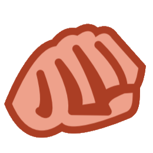

APPENDICE IV: FAQ
QUESTIONS GÉNÉRALES
Q : Si mon héros a une carte d'état Tenace et que je reçois des dégâts, puis-je utiliser une capacité d'interruption pour réduire ou prévenir ces dégâts afin de conserver la carte d'état Tenace ?
R : Non. Les cartes d'état ont la priorité sur toutes les capacités déclenchées, comme les interruptions ; la carte d'état Tenace doit donc être défaussée pour prévenir tous les dégâts avant que d'autres capacités puissent se déclencher.
Un héros peut conserver sa carte d'état Tenace si :
- Un effet constant réduit à zéro les dégâts qu'il subit. En effet, les effets constants ont la priorité sur les cartes d'état.
- Le héros effectue une défense de base et sa DEF réduit à zéro les dégâts infligés par l'ATQ de l'ennemi attaquant. En effet, une défense de base réduit la quantité de dégâts infligés par l'attaquant, et non la quantité de dégâts subis par le défenseur.
Q : Si mon allié avec une carte d'état Tenace subit des dégâts de déferlement, les dégâts en excès sont-ils infligés à mon identité ?
R : Non. Seuls les dégâts en excès subis par l'allié sont infligés à l'identité par le mot-clé déferlement, et une carte d'état Tenace empêche le personnage de subir des dégâts.
BOîTE DE BASE
Q : Dans la boîte de base, il y a 19 cartes d'affinité Agressivité, Justice et Protection, mais seulement 18 cartes d'affinité Commandement. Est-ce correct ?
R : Oui. L'affinité Commandement a reçu 1 carte de moins que les autres affinités, car elle dispose de davantage de cartes uniques.
SPIDER-MAN (#1A)
Q : À quel moment le méchant « initie »-t-il une attaque contre Spider-Man ?
R : Une attaque est « initiée » au moment où le jeu détermine qu'une attaque va être effectuée contre un personnage. Cela inclut les attaques provenant des étapes de jeu (comme l'étape 2 de la phase du méchant) et des capacités de carte (comme une attaque initiée par la traîtrise « Assaut »). La capacité de Spider-Man se résout avant toute étape du processus détaillé dans la section « Attaque (Activation des ennemis) ».
PRIS DANS LA TOILE (#9)
Q : Combien d'attaques Pris dans la Toile empêche-t-elle ?
R : Deux attaques au total. Pris dans la Toile empêche la toute prochaine attaque de l'ennemi attaché en remplaçant cette attaque par le placement d'une carte d'état Sonné. Ensuite, cette carte d'état Sonné empêchera l'attaque suivante de cet ennemi.
Q : Pris dans la Toile empêche-t-elle Sens d'Araignée de se déclencher ?
R : Oui. La capacité de Pris dans la Toile est un effet de remplacement (indiqué par le mot « à la place »), ce qui signifie que l'attaque n'est jamais initiée.
JENNIFER WALTERS (#19B)
Q : Jennifer Walters peut-elle retirer de la menace d'une manigance annexe au moment où elle entre en jeu ?
R : Non. Les manigances annexes entrent en jeu avec de la menace déjà placée sur elles ; la menace n'est donc pas « placée » à ce moment-là.
Q : Si de la menace est placée sur une manigance pendant la mise en place, la capacité de Jennifer Walters se déclenche-t-elle ?
R : Non. Les capacités qui n'ont pas le timing « Mise en place » ne peuvent pas se résoudre pendant la mise en place.
PRATIQUE DU DROIT (#23)
Q : Pratique du Droit peut-elle retirer de la menace de plusieurs manigances simultanément ?
R : Non. Toute la menace retirée par Pratique du Droit doit être retirée d'une seule manigance.
RAGE CONTRÔLÉE (#27)
Q : Si Miss Hulk a une carte d'état Tenace, peut-elle utiliser Rage Contrôlée pour piocher une carte ?
R : Non. La carte d'état Tenace empêche Miss Hulk de « subir 1 dégât », donc le coût de la capacité ne peut pas être payé.
Comme un coût ne peut pas être payé partiellement, vous ne pouvez pas tenter de payer le coût de Rage Contrôlée uniquement pour retirer la carte d'état Tenace de Miss Hulk.
FORCE SURHUMAINE (#28)
Q : Si Miss Hulk attaque un ennemi qui ne peut pas être sonné parce qu'il est déjà sonné ou robuste, l'Interruption forcée de Force Surhumaine se résout-elle ?
R : Non. Comme l'effet de l'Interruption forcée de Force Surhumaine ne peut pas affecter l'ennemi attaqué, l'effet ne peut pas se résoudre et Force Surhumaine n'est pas défaussée.
RAYON RÉPULSEUR (#31)
Q : Le premier point de dégât de Rayon Répulseur peut-il retirer une carte d'état Tenace d'un ennemi, puis les dégâts supplémentaires lui infliger des dégâts ?
R : Non. Les dégâts supplémentaires de Rayon Répulseur constituent une modification simultanée de son premier point de dégât. Par exemple, si un joueur défausse 2 ressources énergie à cause de Rayon Répulseur, il inflige un total de 5 dégâts à un ennemi en une seule fois, car les 4 dégâts supplémentaires se produisent en même temps que le premier point de dégât.
PEPPER POTTS (#33)
Q : Pepper Potts génère-t-elle 2 ressources si une carte avec 2 ressources imprimées (comme Énergie, Génie ou Force) est au sommet de la pile de défausse ?
R : Oui. Pepper Potts génère un nombre de ressources égal en quantité et en type aux ressources de la carte au sommet de la pile de défausse.
Q : Pepper Potts génère-t-elle 2 ressources si une carte ressource « Le Pouvoir de [Affinité] » (comme Le Pouvoir de l'Agressivité) est au sommet de la pile de défausse ?
R : Non. Même si les ressources générées par Pepper Potts sont égales en quantité et en type à celles de la carte du dessus de la pile de défausse, c'est Pepper Potts qui génère ces ressources. Une carte « Le Pouvoir de [Affinité] » ne génère donc jamais elle-même de ressources et n'a pas l'occasion de générer des ressources supplémentaires pour une carte de l'affinité spécifiée.
Q : Pepper Potts peut-elle générer les ressources d'une carte en train d'être dépensée ?
R : Non. Les ressources sont générées simultanément ; la carte dépensée ne sera donc pas encore au sommet de la pile de défausse au moment où Pepper Potts utilise sa capacité.
BOTTES-FUSÉE (#39)
Q : Si Iron Man n'a plus qu'1 point de vie et que son amélioration Bottes-Fusée est défaussée du jeu, Iron Man est-il vaincu ?
R : Oui. Si une capacité qui modifie les points de vie expire ou devient inactive, les points de vie modifiés reviennent à leur valeur sans ce modificateur. Dans ce cas, les points de vie d'Iron Man reviennent à 0, ce qui le vainc immédiatement.
BLACK PANTHER (#40A)
Q : Si un ennemi initie une attaque contre Black Panther mais qu'un autre héros ou un allié défend cette attaque, la capacité Riposte de Black Panther se déclenche-t-elle ?
R : Non. Black Panther doit lui-même être attaqué pour que Riposte se déclenche.
Q : Si Black Panther défend contre une attaque, sa capacité Riposte se déclenche-t-elle ?
R : Oui. Tant que Black Panther lui-même est attaqué, Riposte se déclenche.
CONNAISSANCE ANCESTRALE (#42)
Q : Connaissance Ancestrale peut-elle mélanger différentes versions de Wakanda Forever dans le deck de Black Panther ?
R : Non. Les cartes portant le même titre sont considérées comme étant la même carte pour l'application des capacités de carte.
COSTUME EN VIBRANIUM (#49)
Q : Le déplacement de dégâts défausse-t-il une carte d'état Tenace de l'ennemi ciblé ?
R : Oui. Si des dégâts sont déplacés vers un personnage, ces dégâts déplacés sont considérés comme lui étant infligés.
TIGRA/GREER GRANT NELSON (#51)
Q : La capacité « Réponse » de Tigra se déclenche-t-elle avant ou après qu'elle subit des dégâts consécutifs ?
R : Avant. La condition « Après que Tigra attaque et vainc un sbire... » est vérifiée immédiatement après que Tigra a vaincu un sbire avec sa valeur d'attaque, mais avant l'application de ses dégâts consécutifs.
APPEL À L'AIDE (#71)
Q : Quand on joue Appel à l'Aide, les cartes ressource « Le Pouvoir de [Affinité] » (comme Le Pouvoir du Commandement) génèrent-elles 1 ou 2 ressources ?
R : Le texte d'Appel à l'Aide indique : « Action : payez le coût imprimé d'un allié dans la pile de défausse de n'importe quel joueur... », ce qui signifie que le joueur paie le coût de l'allié lui-même. Si l'affinité de cet allié correspond à celle de la carte « Le Pouvoir de [Affinité] », cette carte génère 2 ressources. Sinon, elle n'en génère qu'1.
TOURBILLON (#130)
Q : Comment l'attaque de Tourbillon contre chaque héros est-elle résolue ?
R : Tourbillon effectue une attaque séparée contre chaque héros, et ces attaques sont résolues simultanément. Chaque joueur résout chaque étape de l'attaque simultanément. Chaque attaque peut avoir un défenseur déclaré, et chaque défenseur défend pour un seul joueur.
ULTRON II (#135)
Q : Si l'attaque d'Ultron est défendue par un autre joueur que celui qui a été attaqué, Ultron gagne-t-il +1 ATQ pour chaque sbire Drone engagé avec le joueur défenseur ou avec le joueur contre lequel Ultron a initié l'attaque ?
R : La capacité d'Ultron est déjà résolue avant la déclaration des défenseurs, créant un effet persistant qui se réfère à la cible initiale de l'attaque. Le bonus d'ATQ d'Ultron est basé sur le nombre de sbires Drone engagés avec le joueur contre lequel Ultron a initié l'attaque. Si ce nombre change, le bonus change aussi.
ASSAUT (#197)
Q : Si Assaut fait que le méchant m'attaque et qu'il ne reste qu'une seule carte dans le deck Rencontre, Assaut est-elle dans la pile de défausse Rencontre lorsque celle-ci est mélangée dans le deck Rencontre après que le méchant a reçu une carte de boost ?
R : Non. Assaut n'est pas défaussée tant qu'elle n'a pas fini de se résoudre, ce qui arrive une fois l'attaque du méchant entièrement résolue.
PACK SCÉNARIO BOUFFON VERT
NORMAN OSBORN (#1A)
Q : Une carte d'état Sonné empêche-t-elle l'activation d'attaque de Norman Osborn ?
R : Oui. Comme les cartes d'état ont priorité sur toutes les autres capacités, une carte d'état Sonné empêchera l'activation de Norman Osborn.
LE BOUFFON VERT (#1B)
Q : Pendant que le Bouffon Vert attaque, si le dernier marqueur folie est retiré de l'environnement Accès de Folie via une capacité de « Boost », que se passe-t-il ?
R : Le Bouffon Vert est immédiatement retourné sur sa forme Norman Osborn.
Les icônes de boost de la carte de boost sont ensuite ajoutées à la valeur d'ATQ de Norman Osborn, qui est ![[icone_etoile.jpg 15]] et est traitée comme une valeur de 0.
Norman Osborn inflige alors des dégâts d'attaque égaux à sa valeur d'ATQ modifiée (base de 0 ATQ, plus le nombre d'icônes de boost de la carte de boost). Dans cette situation précise, l'« Interruption forcée » de Norman Osborn ne se déclenche pas, car l'attaque a déjà dépassé le point de timing « Quand Norman Osborn est censé attaquer... » au moment où il change de forme.
JE TE VOIS (#30)
Q : Si je suis en forme alter-ego et que je révèle « Je Te Vois », le Bouffon Vert m'attaque-t-il ?
R : Oui. Comme la capacité « Une fois révélée » de Je Te Vois ne précise ni forme héros ni forme alter-ego, le Bouffon Vert attaque le joueur quelle que soit sa forme.
PACK HÉROS CAPTAIN AMERICA
STEVE ROGERS (#1B)
Q : Si le Bouclier de Captain America est mis en jeu comme sbire Drone pendant la mise en place d'Ultron, puis-je le récupérer avec la capacité de mise en place de Steve Rogers ?
R : Non. La capacité de mise en place cherche spécifiquement dans le deck et la pile de défausse du joueur. Si le Bouclier de Captain America n'est dans aucune de ces zones, la capacité échoue à le trouver.
Q : Si un allié est joué pendant que je suis Captain America, puis que je change de forme pour Steve Rogers, la capacité « Légende Vivante » de Steve Rogers s'appliquera-t-elle encore au prochain allié joué ?
R : Non. Légende Vivante ne s'applique qu'au tout premier allié joué à chaque round.
PACK HÉROS MISS MARVEL
AMPLIFICATION ! (#10)
Q : Si un événement Attaque inflige plusieurs sources de dégâts (comme Mêlée), comment fonctionne Amplification ! ?
R : Amplification ! augmente de 2 toutes les occurrences de dégâts infligées par un événement Attaque. Par exemple, si un événement doit infliger 3 dégâts, puis 3 dégâts à nouveau, il infligera à la place 5 dégâts, puis encore 5 dégâts.
RÉDUCTION (#11)
Q : En jouant Urgence, puis-je incliner Réduction pour retirer 2 menaces d'une manigance ?
R : Non. Réduction augmente chaque occurrence de menace retirée par un événement Contre. Comme Urgence ne fait que prévenir de la menace et n'en retire aucune, Réduction n'a aucun effet.
NOVA/SAM ALEXANDER (#12)
Q : Si la capacité de Nova vainc un ennemi attaquant, l'attaque de cet ennemi inflige-t-elle quand même des dégâts ?
R : Non. Même si la séquence d'attaque est initiée, les dégâts n'ont pas encore été calculés à ce stade. Si Nova vainc l'ennemi pendant cette étape, le reste de la séquence d'attaque ne se résout pas.
MÊLÉE (#30)
Q : Mêlée peut-elle infliger des dégâts deux fois au même ennemi ?
R : Non. Quand Mêlée inflige des dégâts une seconde fois, ces dégâts doivent être infligés à un ennemi différent de la première cible. Notez que les différents stades d'un méchant sont considérés comme le même ennemi.
Q : Si je suis engagé avec un sbire ayant Garde, puis-je cibler ce sbire et le méchant, tant que le sbire serait détruit par les dégâts infligés par Mêlée ?
R : Oui. Tant que vous vainquez le sbire avec la première phrase de la capacité de Mêlée, vous pouvez infliger des dégâts au méchant avec la seconde phrase.
PACK HÉROS THOR
JARNBJORN (#19)
Q : Puis-je déclencher Jarnbjorn après avoir joué un événement Attaque ?
R : Oui. Un héros est considéré comme effectuant une attaque aussi bien via son attaque de base que via des actions portant le mot-clé (attaque).
Q : Si un événement Attaque inflige des dégâts à plusieurs ennemis, Jarnbjorn peut-il être déclenché pour chacun ?
R : Oui. Chaque ennemi qui subit des dégâts d'un événement Attaque est considéré comme ayant été attaqué.
PACK HÉROS BLACK WIDOW
DANSE DE LA MORT (#4)
Q : Danse de la Mort ne contient pas le label (attaque). Chacun de ses effets de dégâts est-il réellement considéré comme une attaque, ou est-ce une erreur ?
R : La première phrase de la capacité de Danse de la Mort définit chacun de ses effets de dégâts comme une attaque distincte. Résolvez-les comme des attaques normales, une par une.
Q : Si Black Widow est sonnée, chacune des attaques de Danse de la Mort est-elle empêchée, ou seulement la première ?
R : Comme Danse de la Mort crée trois attaques séparées, une carte d'état Sonné sur Black Widow n'empêchera que la première attaque. Les deuxième et troisième attaques peuvent être effectuées normalement.
ATTAQUE ACROBATIQUE (#6)
Q : Attaque Acrobatique peut-elle annuler 0 icône de boost ?
R : Non. Attaque Acrobatique ne peut pas être utilisée pour annuler des icônes de boost sur une carte qui n'en a pas, car il n'y a pas de cible valide pour la capacité.
MORSURE DE LA VEUVE (#10)
Q : Si j'ai Morsure de la Veuve en jeu et que je révèle un sbire avec Coup Rapide, lequel se résout en premier ?
R : Coup Rapide se déclenche lorsqu'un sbire engage un joueur, et les sbires entrent en jeu engagés avec le joueur qui les révèle ; Coup Rapide et la « Réponse » de Morsure de la Veuve ont donc le même timing. Les mots-clés ont la priorité de timing sur les capacités de « Réponse », donc Coup Rapide se résout en premier.
PACK HÉROS DOCTEUR STRANGE
L'INFIRMIÈRE DE NUIT (#19)
Q : Si la seule carte d'état d'un héros est une carte d'état Tenace, est-elle défaussée si j'utilise L'Infirmière de Nuit pour soigner ce héros ?
R : Oui. La capacité de L'Infirmière de Nuit défausse 1 carte d'état de ce héros, quel qu'en soit le type.
IMPERTURBABLE (#20)
Q : Si, en défendant contre une attaque ennemie, mon identité subit des dégâts d'une capacité de « Boost » mais ne subit aucun dégât de l'ennemi attaquant autrement, puis-je quand même déclencher Imperturbable pour piocher une carte ?
R : Oui. Le coût de la capacité d'Imperturbable exige seulement que l'identité en défense ne subisse aucun dégât pendant l'étape 4 de l'attaque ennemie.
CONTRE-SORT (#30)
Q : Contre-Sort dit « Attachez cette carte à votre héros. » Si je pioche Contre-Sort en forme alter-ego, que se passe-t-il ?
R : Contre-Sort tente de s'attacher à votre héros, mais ne le peut pas.
Comme il ne peut pas satisfaire sa condition, défaussez-le simplement.
(Ne révélez pas une nouvelle carte Rencontre à sa place.)
IMAGES D'IKONN (#33)
Q : Puis-je résoudre Images d'Ikonn si le méchant est déjà désorienté et qu'il n'y a pas de menace sur une manigance ?
R : Oui. Tant qu'une partie de la capacité d'Images d'Ikonn a une cible valide, elle fait autant d'effets que possible.
Même si son premier effet peut ne pas avoir de cible valide si le méchant est déjà désorienté et qu'il n'y a pas de menace sur une manigance, son second effet a toujours une cible valide (la carte elle-même).
PACK HÉROS HULK
COUP FRACASSANT (#2)
Q : Si le coût en ressources de Coup Fracassant est réduit à 0, peut-elle être jouée sans dépenser de ressources 
?
R : Oui. La capacité « Vous ne pouvez dépenser que des ressources pour payer cette carte » de Coup Fracassant ne s'applique que lorsque des ressources sont effectivement dépensées pour payer son coût. Si ce coût est réduit à 0, aucune ressource n'est requise pour payer Coup Fracassant, donc aucune ressource ne doit être dépensée.
PUISSANCE INARRÊTABLE (#6)
Q : Si le coût en ressources de Puissance Inarrêtable est réduit à 0, vais-je piocher 1 carte grâce à sa seconde capacité ?
R : Non. Comme aucune ressource n'a été dépensée pour payer le coût de Puissance Inarrêtable, sa condition « Si vous n'avez utilisé que des ressources pour payer cette capacité... » n'est pas remplie ; cet effet ne se résout donc pas.
LE CHOC DES TITANS (#28)
Q : Si mon personnage ayant la plus haute ATQ est un allié, et que l'attaque du Choc des Titans n'est pas défendue, qui subit les dégâts : mon identité ou l'allié attaqué ?
R : L'allié subit tous les dégâts de cette attaque non défendue.
EXTENSION L'AVÈNEMENT DE CRÂNE ROUGE
CARQUOIS DE HAWKEYE (#3)
Q : Après avoir utilisé le Carquois de Hawkeye pour chercher parmi les 5 cartes du dessus de mon deck, que dois-je faire de ces cartes ?
R : Mélangez ces cartes dans le deck de Hawkeye. Après qu'une capacité de recherche est terminée — qu'elle porte sur tout le deck ou seulement une partie — le deck entier est mélangé.
DÉSIGNÉE POUR MOURIR (#28)
Q : Quand Désignée pour Mourir est révélée, si un exemplaire de Mockingbird est déjà sous le contrôle d'un joueur qui n'est pas Clint Barton, que se passe-t-il ?
R : Le joueur Clint Barton doit chercher Mockingbird dans sa main, son deck, sa pile de défausse et sa zone de jeu, mais il ne peut pas placer sa Mockingbird sous Désignée pour Mourir puisqu'un personnage unique avec le même titre/sous-titre est déjà en jeu (mélangez après avoir cherché dans le deck). Toutefois, quand Désignée pour Mourir est déjouée, tout exemplaire de Mockingbird en jeu (même contrôlé par un autre joueur) est renvoyé dans la main de son propriétaire.
JESSICA DREW (#31B)
Q : La capacité Agent Double de Jessica Drew exige-t-elle que son deck soit construit avec deux affinités ?
R : Oui. Un nombre égal de cartes de deux affinités différentes doit être inclus dans son deck.
FINESSE (#33)
Q : Finesse peut-elle générer une ressource pour payer la capacité d'une carte d'affinité (comme Jarnbjorn) ?
R : Oui. Tant que la ressource générée par Finesse est dépensée pour une carte d'affinité (son coût en ressources ou un coût à l'intérieur de la capacité de cette carte), Finesse peut être utilisée.
PACK SCÉNARIO KANG LE CONQUÉRANT
Q : Pendant que les joueurs sont séparés en aires de jeu distinctes, dans quelle aire de jeu les cartes Environnement sont-elles considérées ?
R : Les cartes Environnement sont considérées comme étant dans l'aire de jeu de tous les joueurs.
RÉDUIT À L'IMPUISSANCE (#20)
Q : Si Réduit à l'Impuissance est dans la zone de jeu de Docteur Strange, le joueur Docteur Strange peut-il encore utiliser le deck Invocation ?
R : Oui. Les capacités des cartes du deck Invocation sont simplement résolues, pas jouées.
PACK HÉROS LA GUÊPE
LA GUÊPE (#1C)
Q : Quand La Guêpe est en forme héros Géante, comment sa première capacité interagit-elle avec le mot-clé Patrouille et l'icône Crise ?
R : La première capacité de La Guêpe permet à son contre de base de retirer simultanément de la menace de chaque manigance que La Guêpe choisit. La Guêpe ne peut pas choisir la manigance principale comme cible tant qu'elle est engagée avec un sbire ayant Patrouille, ou qu'une carte avec une icône Crise est en jeu. En raison de la nature simultanée de cette capacité, cela reste vrai même si la carte avec Patrouille ou l'icône Crise quitte le jeu pendant la résolution du contre de base.
Q : Quand La Guêpe est en forme héros Géante, comment sa seconde capacité interagit-elle avec le mot-clé Garde ?
R : La seconde capacité de La Guêpe permet à son attaque de base d'infliger des dégâts simultanément à chaque ennemi que La Guêpe choisit.
La Guêpe ne peut pas choisir le méchant comme cible tant qu'elle est engagée avec un sbire ayant Garde. En raison de la nature simultanée de cette capacité, cela reste vrai même si la carte avec Garde quitte le jeu pendant la résolution de son attaque de base.
Q : Quand La Guêpe est en forme héros Géante, comment sa seconde capacité interagit-elle avec plusieurs ennemis qui ont Riposte ?
R : La Guêpe est considérée comme attaquant chaque cible affectée par son attaque de base répartie. Si son attaque de base est répartie entre plusieurs ennemis avec Riposte, chaque occurrence de Riposte inflige des dégâts à La Guêpe (dans l'ordre de son choix).
PACK HÉROS VIF-ARGENT
VIF-ARGENT (#1A)
Q : Si Vif-Argent tente d'effectuer une attaque de base ou un contre de base alors qu'il est sonné ou désorienté, sa capacité Super Vitesse peut-elle se déclencher ?
R : Non. Les cartes d'état Sonné et Désorienté remplacent l'utilisation du pouvoir de base par leur retrait. Si Vif-Argent fait une attaque de base en étant sonné, ou un contre de base en étant désorienté, il n'est pas considéré comme ayant utilisé un pouvoir de base et la condition de sa capacité Super Vitesse n'est pas remplie.
PACK HÉROS LA SORCIÈRE ROUGE
SPHÈRE HEX (#4)
Q : Pour la seconde phrase de Sphère Hex, les capacités listées à puces se résolvent-elles à chaque carte défaussée du deck Rencontre, ou seulement après que les 3 cartes ont été défaussées ?
R : Comme Sphère Hex ne contient pas d'effet d'altération, résolvez entièrement la première phrase de Sphère Hex, sans interruption.
Ensuite, déterminez et résolvez les capacités à puces appropriées selon ce qui a été défaussé.
SANTÉ MENTALE PRÉCAIRE (#23)
Q : Est-ce intentionnel que La Sorcière Rouge ait deux cartes Obligation ?
R : Oui. Les pouvoirs de La Sorcière Rouge sont chaotiques, souvent en sa faveur, mais parfois aussi contre elle.
Bien qu'elle ait de nombreuses cartes dans son set personnel représentant les facettes positives de ses pouvoirs, le fait d'avoir plusieurs obligations représente les facettes négatives.
EXTENSION LES GARDIENS DE LA GALAXIE
SETS RENCONTRE MODULAIRES
Q : Dans l'extension Les Gardiens de la Galaxie, quels sets sont considérés comme des sets Rencontre modulaires ?
R : Si un set Rencontre n'est ni spécifique à un scénario (le nom du scénario figure dans la zone du nom de set Rencontre), ni spécifique à la campagne (le mot « Campagne » figure dans cette zone), alors il est modulaire. Les huit sets Rencontre modulaires de cette extension sont : Traqueur Badoon, Troupe de Badoon, Artifacts Galactiques, Milices Kree, Créatures de la Menagerie, Pierre du Pouvoir, Pirates de l'Espace et Contrôles du Vaisseau.
MODE CAMPAGNE
Q : Dois-je jouer en mode expert pour chaque scénario d'une campagne experte ?
R : Non. Augmenter la difficulté d'une campagne ajoute seulement des cartes ou des instructions de mise en place supplémentaires à chaque scénario de cette campagne. Cela n'impose aucun autre mode de jeu. Pour chaque scénario d'une campagne, les joueurs sont encouragés à choisir les modes de jeu qui leur conviennent.
Q : Si je joue un scénario en mode expert, dois-je jouer le scénario suivant dans le même mode ?
R : Non. Les joueurs peuvent, par exemple, jouer un scénario avec une combinaison des modes standard, héroïque et escarmouche, puis jouer le scénario suivant uniquement en mode expert. Les joueurs peuvent mixer les modes comme ils le souhaitent entre les scénarios.
ROCKET RACCOON (#29A)
Q : Si Rocket Raccoon utilise sa capacité « Rafistolage » mais que l'amélioration Tech n'est pas placée dans une pile de défausse (par exemple à cause de la capacité du Collectionneur), Rocket Raccoon pioche-t-il 2 cartes ?
R : Oui. Défausser est l'acte de tenter de placer une carte dans une pile de défausse. Même si l'amélioration Tech finit dans une autre zone de jeu, le coût de « Rafistolage » de Rocket Raccoon a bien été payé.
RÉCUP' (#33)
Q : Si l'allié Hulk (Boîte de base #50) défausse Récup', que se passe-t-il ?
R : La capacité de Hulk vérifie simultanément toutes les ressources imprimées sur Récup', puis résout l'effet approprié en fonction du résultat. Comme cette vérification et cette résolution sont simultanées, le joueur qui contrôle Hulk choisit l'ordre de résolution des effets.
BATTERIES (#34)
Q : Les Batteries peuvent-elles déplacer un marqueur charge vers une carte Tech qui n'utilise pas de « marqueurs charge » ?
R : Oui. C'est la carte sur laquelle se trouve un marqueur polyvalent qui définit le type de ce marqueur ; Batteries peuvent donc déplacer un marqueur vers n'importe quelle carte Tech, et ce marqueur prendra le type défini par cette carte (s'il y en a un).
PIERRE DU POUVOIR (#149)
Q : Si une identité qui contrôle la Pierre du Pouvoir est vaincue, que devient la Pierre du Pouvoir ?
R : Si un joueur est éliminé alors qu'une carte permanente qu'il ne possède pas se trouve dans sa zone de jeu, placez cette carte permanente dans la pile de défausse de son propriétaire. Dans le cas de la Pierre du Pouvoir, placez-la dans la pile de défausse Rencontre.
Q : Si un personnage avec la Pierre du Pouvoir reçoit 3 dégâts ou plus, mais n'en subit pas 3 ou plus grâce à de la prévention de dégâts, l'attaquant récupère-t-il la Pierre du Pouvoir ?
R : Oui. La prévention des dégâts ne réduit pas la quantité de dégâts infligés. Notez qu'un héros qui effectue une défense de base réduit la quantité de dégâts infligés d'un montant égal à sa DEF ; défendre peut donc empêcher que la Pierre du Pouvoir soit prise.
PACK HÉROS STAR-LORD
STAR-LORD (#1A)
Q : Si je joue un allié qui n'a pas le trait Gardien imprimé alors que je suis en forme héros, puis-je déclencher la réponse de Nulle-Part (#22) ?
R : Oui. La capacité constante de Star-Lord donne le trait Gardien à chaque allié qu'il contrôle. Les capacités constantes ont priorité sur les capacités déclenchées comme la « Réponse » de Nulle-Part ; le nouvel allié joué aura donc déjà le trait Gardien avant le déclenchement de Nulle-Part.
MISTER KNIFE (#26)
Q : Quand Mister Knife est révélé par Ombre du Passé, Ombre du Passé gagne-t-elle Renfort si c'était la première traîtrise révélée par le joueur Star-Lord pendant cette phase ?
R : Non. Mister Knife n'était pas en jeu quand Ombre du Passé a été révélée, donc sa capacité ne fait pas gagner Renfort à Ombre du Passé.
PLONGEON EXPLOSIF (#28)
Q : Puis-je jouer Plongeon Explosif si je suis engagé avec un sbire ayant Garde ? Si oui, comment cela se résout-il ?
R : Oui. Les capacités se résolvent une phrase à la fois ; « infligez 7 dégâts à un ennemi » se résout d'abord. Si ces dégâts vainquent le sbire Garde, le second effet (« infligez 1 dégât à chaque autre ennemi ») infligera 1 dégât au méchant. Si la première phrase ne vainc pas le sbire Garde, la seconde infligera 1 dégât à chaque ennemi autre que le méchant et l'ennemi ciblé par la première phrase.
PACK HÉROS VENOM
TENTACULES AGRIPPANTS (#3)
Q : Si j'annule une attaque avec Tentacules Agrippants, mon héros est-il considéré comme ayant défendu cette attaque ?
R : Oui. Comme Tentacules Agrippants porte le label Défense, votre héros est considéré comme ayant défendu l'attaque.
EXTENSION L'OMBRE DU TITAN FOU
SCÉNARIO N°2 DÉFENSE DE LA TOUR
Q : Quand un sbire manigance pendant ce scénario, sur quelle manigance principale sa menace est-elle placée ?
R : La menace d'un sbire qui manigance est placée sur la manigance principale qui a l'attachement « Défense Focalisée » attaché.
ENTRE-DEUX (#42), TRIBUNAL VIVANT (#48), ÉTERNITÉ (#54), LE JARDINIER (#60)
Q : Où va un événement Entité Cosmique après avoir été résolu comme carte de boost ?
R : Cet événement est placé dans la pile de défausse du deck Rencontre.
PACK HÉROS NEBULA
VIEUX RIVAUX (#31)
Q : Si Vieux Rivaux fait attaquer un allié ou héros Gamora, son contrôleur peut-il déclencher des capacités liées au fait qu'elle attaque pendant cette attaque ?
R : Oui. Gamora est considérée comme ayant attaqué, donc les capacités qui se déclenchent quand elle attaque peuvent être résolues.
Q : Si Vieux Rivaux fait attaquer un allié Gamora, subit-elle des dégâts consécutifs ?
R : Oui, les alliés subissent toujours des dégâts consécutifs après avoir attaqué.
PACK HÉROS WAR MACHINE
CANON DU GANTELET (#5)
Q : La capacité ressource de Canon du Gantelet peut-elle être déclenchée en payant un coût autre que celui d'un événement War Machine afin de placer 1 marqueur munition sur War Machine ?
R : Non. La capacité ressource de Canon du Gantelet ne peut être déclenchée que pour payer un événement War Machine.
EXTENSION SINISTRES MOTIVATIONS
SCÉNARIO N°4 LES SINISTRES SIX
Q : S'il y a plus d'un méchant en jeu, quel méchant subit les dégâts en excès des attaques avec Déferlement ?
R : Le méchant avec le marqueur actif subit les dégâts de déferlement.
Q : Que se passe-t-il si un méchant doit s'activer et qu'il y a un ou plusieurs méchants en jeu, mais qu'aucun n'a le marqueur actif ?
R : Placez le marqueur actif sur le méchant avec la valeur d'ordre d'activation la plus basse, puis poursuivez cette activation.
SCÉNARIO N°5 VENOM GOBLIN
Q : Que se passe-t-il quand l'une des manigances principales est complétée ?
R : Quand une manigance principale a une menace égale ou supérieure à sa valeur de seuil de menace, retournez cette manigance principale sur sa face Environnement et révélez cet environnement.
Q : Quand un effet de carte Joueur place un jeton accélération sur « la manigance principale », sur quelle manigance est placé ce jeton ?
R : Ce jeton est placé sur la manigance principale qui a le marqueur planeur.
Q : Quand un effet de carte Joueur compte le nombre de jetons accélération sur « la manigance principale », sur quelle manigance principale les jetons sont-ils comptés ?
R : Le joueur qui utilise cet effet choisit une manigance principale sur laquelle compter les jetons accélération.
À TRAVERS LE SPIDER-VERSE (#18)
Q : Cette capacité peut-elle être répétée plus d'une fois ?
R : Oui. Répéter la capacité de cette carte inclut l'effet de répétition lui-même. Tant qu'un joueur pouvant dépenser 3 ressources et incliner une carte Web-Warrior peut être choisi, la capacité peut être répétée.
PACK HÉROS IRONHEART
« ALLEZ LES CHAMPIONS ! » (#25)
Q : Si j'ai joué « Allez les Champions ! » ce round-ci, puis-je déclencher une capacité qui exige de subir des dégâts comme coût ?
R : Non. Si vous ne pouvez pas subir de dégâts, vous ne pouvez pas payer un coût qui exige de subir des dégâts.
PACK HÉROS SPIDER-COCHON
GUERRIER DE LA GRANDE TOILE (#29)
Q : Le héros ou allié SP//dr peut-il avoir Guerrier de la Grande Toile attaché ?
R : Non. Le titre d'un personnage doit contenir le mot « Spider » orthographié exactement ainsi pour que Guerrier de la Grande Toile puisse lui être attaché.
PACK HÉROS SP//DR
SPIDER-MAN NOIR (#15)
Q : Si la capacité « Une fois révélée » d'une traîtrise est annulée, Spider-Man Noir peut-il attacher cette traîtrise à lui-même ?
R : Pour que la réponse de Spider-Man Noir se déclenche, une partie de la carte Traîtrise doit être résolue. Si la traîtrise a un mot-clé qui se résout quand elle est révélée, comme Renfort ou Incitation X, Spider-Man Noir peut déclencher sa réponse pour attacher cette carte à lui-même. Si aucune partie de la traîtrise ne se résout, il ne peut pas l'attacher.
EXTENSION LA GENÈSE DES MUTANTS
COUP DE POING PUISSANT (#14)
Q : Si Shadowcat joue Coup de poing puissant sur le méchant, à quel moment retourne-t-elle sa forme de masse ?
R : Quand le méchant initie une attaque, Shadowcat joue Coup de poing puissant. Elle inflige 4 dégâts au méchant. Dès qu'elle a fini de résoudre l'effet portant le label attaque, elle est considérée comme ayant attaqué et peut retourner sa forme de masse dès que les dégâts sont infligés (elle doit le faire si elle est en forme Incorporelle).
Le méchant poursuit ensuite son attaque, et Shadowcat est désormais considérée comme défendant cette attaque. Si elle est en forme Incorporelle, elle ne subira aucun dégât de cette attaque grâce à la capacité constante de son amélioration Incorporelle.
Après que le méchant a infligé les dégâts de son attaque (ou tenté de le faire), Shadowcat termine sa défense et peut retourner à nouveau sa forme de masse (ce qu'elle doit faire si elle est en forme Incorporelle).
PROTECTEURS MUTANTS (#17)
Q : Comment fonctionne le label Défense de Protecteurs Mutants puisque la capacité de la carte fait d'un allié le défenseur ?
R : Quand un joueur joue Protecteurs Mutants, ce joueur devient la cible de l'attaque ennemie et l'allié X-Men mis en jeu devient le défenseur.
Si l'allié défenseur quitte le jeu avant que les dégâts de l'attaque soient infligés, le héros du joueur devient défenseur et peut déclencher des réponses « après que vous défendez » après la résolution de l'attaque. (Ce n'est pas une défense de base et l'attaque du méchant n'est pas réduite par la DEF du héros.)
REINE BLANCHE (#56)
Q : Comment fonctionne la capacité constante de Reine Blanche ?
R : L'expression « vous êtes désorienté » vous demande de placer une carte d'état Désorienté sur votre identité. Comme Reine Blanche utilise cette expression en capacité constante, elle place continuellement des cartes d'état Désorienté sur l'identité du joueur engagé, jusqu'à ce que cette identité ne puisse plus en avoir (normalement une, mais cela peut être plus, par exemple avec Solide). Si cette identité tente de contrer, elle peut le faire et retirer ses cartes d'état Désorienté, mais elle en reçoit immédiatement de nouvelles. Quand Reine Blanche quitte le jeu, les cartes d'état Désorienté restent sur l'identité jusqu'à ce qu'elle tente de contrer pour les retirer.
OPÉRATION TOLÉRANCE ZÉRO (#104)
Q : Si un allié n'est pas défaussé après avoir été vaincu par une attaque ennemie (par exemple, il est renvoyé en main ou mélangé dans un deck), va-t-il sous Opération Tolérance Zéro ?
R : Oui. Opération Tolérance Zéro ne précise pas où trouver l'allié vaincu au moment de sa résolution ; il est donc placé sous Opération Tolérance Zéro, quel que soit l'endroit où il s'est retrouvé.
FABIAN CORTEZ (#159)
Q : Si la capacité « Une fois vaincu » de Fabian Cortez met en jeu un sbire Acolyte avec le mot-clé Collaboration alors que Fabian Cortez est le seul autre sbire Acolyte en jeu, le mot-clé Collaboration de l'autre sbire se déclenche-t-il ?
R : Non. Comme la mise en jeu de l'autre sbire est le dernier effet de la capacité « Une fois vaincu » de Fabian Cortez, Fabian Cortez est défaussé immédiatement quand l'autre sbire entre en jeu. Fabian Cortez n'est donc plus en jeu quand le mot-clé Collaboration de l'autre sbire tente de trouver un sbire Acolyte en jeu.
PACK HÉROS CYCLOPE
RAYON EN RICOCHET (#9)
Q : Si Cyclope choisit le même ennemi avec Exploiter Une Faiblesse attaché pour les deux occurrences de dégâts de Rayon En Ricochet, combien de dégâts sont infligés à cet ennemi ?
R : Exploiter Une Faiblesse augmente de 1 chaque occurrence de dégâts que Rayon En Ricochet inflige à l'ennemi auquel Exploiter Une Faiblesse est attaché ; Rayon En Ricochet inflige donc un total de 8 dégâts à cet ennemi (4 + 4).
PACK SCÉNARIO MOJOMANIA
LE CRIME ÉTAIT PRESQUE MOJO (#35)
Q : Si Le Crime Était Presque Mojo est en jeu quand Spiral se retourne, son mot-clé Incitation 1 se déclenche-t-il ?
R : Oui. Les méchants sont des cartes Rencontre ; Le Crime Était Presque Mojo donne donc Incitation 1 à Spiral. Quand Spiral se retourne, sa nouvelle face est révélée, donc son Incitation 1 se résout.
LES MOJOS DE L'OUEST (#66)
Q : Comment les dégâts de déferlement sont-ils affectés par l'Interruption forcée de Mojo Sauvage ?
R : Mojo Sauvage augmente d'abord de 1 les dégâts initiaux infligés à un sbire ou un allié, puis, quand les dégâts en excès sont appliqués au méchant ou à l'identité, Mojo Sauvage les augmente à nouveau de 1, ce qui signifie que les dégâts de déferlement totaux infligés sont augmentés de 2.
EXTENSION NEXT EVOLUTION
MALICE (#199)
Q : Malice est-elle encore un sbire tant qu'elle est attachée à un allié ?
R : Oui. Tant que Malice est attachée à un allié :
- Elle conserve le type de carte sbire.
- Elle conserve tous les dégâts sur elle.
- Elle peut être attaquée et ciblée par des capacités de carte (y compris des attachements) comme n'importe quel sbire, mais ne peut pas être vaincue à nouveau, même si elle gagne des points de vie ou soigne des dégâts.
- Elle n'est pas considérée comme engagée avec un joueur et ne peut donc pas s'activer.
- Elle est défaussée quand la carte à laquelle elle est attachée quitte le jeu.
PACK HÉROS X-23
HONEY BADGER (#3)
Q : La « Réponse » de Honey Badger peut-elle être déclenchée si les dégâts la vainquent ?
R : Non. Au moment où la « Réponse » de Honey Badger devrait se déclencher, elle a déjà quitté le jeu ; elle ne peut donc pas être déclenchée.
PACK HÉROS DEADPOOL
CRISE DES DEADPOOLS INFINIS (#37)
Q : Crise des Deadpools Infinis est-elle incluse dans le deck Rencontre si une capacité permet à un joueur d'inclure une ou plusieurs cartes d'affinité ’Pool hors de son affinité choisie ?
R : Non. Crise des Deadpools Infinis est incluse uniquement si au moins un joueur choisit l'affinité ’Pool comme (l'une de) ses affinités choisies.
EXTENSION L'ÂGE D'APOCALYPSE
MAGIK (#30A)
Q : Quand Magik joue la carte du dessus de son deck, à quel moment la carte suivante de son deck est-elle retournée face visible ?
R : Quand elle joue la carte du dessus de son deck (c'est le même processus que jouer une carte depuis la main), Magik déplace la carte qu'elle joue devant elle à l'étape 3 du processus décrit dans la section Initier des Capacités. Dès qu'elle le fait, elle retourne face visible la nouvelle carte du dessus de son deck.
Q : Magik peut-elle jouer la carte du dessus de son deck avec une capacité qui dit « jouez une carte depuis votre main », comme Exercice de Cohésion d'Équipe (Ant-Man #24) ?
R : Oui. Chaque fois que Magik a l'opportunité de jouer une carte depuis sa main, elle peut choisir de jouer à la place la carte du dessus de son deck (une fois par phase).
Q : Magik peut-elle résoudre une capacité qui se déclenche « après que vous avez joué [carte] depuis votre main », comme Pixie (Storm #17), si elle joue cette carte depuis le dessus de son deck ?
R : Oui. Quand Magik joue une carte depuis le dessus de son deck, cette carte est considérée comme ayant été jouée depuis sa main.
Q : Magik peut-elle mettre en jeu la carte du dessus de son deck comme si elle était dans sa main, par exemple avec Protecteurs Mutants (La Génèse Des Mutants #17) ?
R : Non. Mettre une carte en jeu n'est pas la même chose que jouer une carte, et la capacité de Magik lui permet uniquement de jouer la carte du dessus de son deck, pas de la mettre en jeu.
EXTENSION AGENTS DU S.H.I.E.L.D.
MARIA HILL (#1B)
Q : Puis-je inclure seulement une ou deux cartes soutien S.H.I.E.L.D. d'autres affinités que mon affinité choisie dans mon deck Maria Hill ?
R : Non. La capacité de Maria Hill est du tout ou rien. Vous devez inclure le nombre maximum d'exemplaires de chacune de exactement trois cartes soutien S.H.I.E.L.D. d'affinités autres que la vôtre, sinon vous ne pouvez inclure aucun soutien S.H.I.E.L.D. d'autres affinités dans votre deck.
FURTIVITÉ (#35)
Q : Quand la forme combinaison Furtivité de Nick Fury change l'activation du méchant en manigance, que se passe-t-il si ce méchant est désorienté ?
R : La capacité d'interruption de Furtivité fait réinitialiser l'activation du méchant, cette fois comme activation de manigance ; l'état Désorienté annule donc cette activation (et Nick Fury ne place aucune menace sur son amélioration de forme combinaison).
PACK HÉROS BLACK PANTHER
LA TROMPE DE L'ÉLÉPHANT (#7)
Q : Puis-je satisfaire le coût de la capacité d'action de La Trompe de l'Éléphant en inclinant seulement La Trompe de l'Éléphant elle-même ?
R : Oui. La Trompe de l'Éléphant est elle-même un soutien Wakanda ; elle satisfait donc le minimum d'un allié ou soutien Wakanda requis pour payer le coût de sa capacité.
REPÉREUR DE CIBLE (#38)
Q : Si j'utilise Repéreur de Cible sur un sbire révélé par un autre joueur, ce sbire engage-t-il quand même cet autre joueur ?
R : Non. Repéreur de Cible interrompt l'engagement de ce sbire et le fait engager à la place le joueur qui utilise Repéreur de Cible.
PACK HÉROS FALCON
RAFALE (#2)
Q : La capacité de Rafale peut-elle être déclenchée si la carte du dessus du deck Rencontre est visible et que cette carte n'a pas d'icônes dans sa zone de boost ?
R : Non, car le joueur sait que la capacité ne pourra pas affecter sa cible, la capacité ne peut pas être déclenchée.
PACK HÉROS HERCULES
CARTES TRAVAIL
Q : Que se passe-t-il si une carte Travail ne trouve pas de cible quand elle est révélée ?
R : Cette carte Travail est défaussée. Chaque fois qu'une carte Travail quitte le jeu autrement qu'en étant placée dans la zone de victoire, placez-la au bas du deck Travail.
EN v1.8
APPENDIX IV: FAQ
GENERAL QUESTIONS
Q: If my hero has a tough status card and I am dealt damage, can I use an interrupt ability to reduce or prevent that damage in order to keep the tough status card?
A: No. Status cards have priority over all triggered abilities, like interrupts, so the tough status card must be discarded to prevent all of the damage before any other abilities could trigger.
A hero can keep their tough status card if:
1. A constant effect reduces the damage the hero takes to zero. This is because constant effects have priority over status cards.
2. The hero makes a basic defense and their DEF reduces the damage dealt by the attacking enemy’s ATK to zero. This is because a basic defense reduces the amount of damage dealt by the attacker, rather than the amount of damage taken by the defender.
Q: If my ally with a tough status card takes overkill damage, does the excess damage get dealt to my identity?
A: No. Only excess damage “taken” by the ally gets dealt to the identity by the overkill keyword, and a tough status card prevents the character from “taking” any damage.
CORE SET
Q: In the Core Set, there are 19 Aggression, Justice, and Protection aspect cards, but only 18 Leadership aspect cards. Is this correct?
A: Yes. The Leadership aspect received 1 fewer card than the other aspects because it has more unique cards to choose from.
SPIDER-MAN (#1A)
Q: When does the villain “initiate” an attack against Spider-Man?
A: An attack is “initiated” the moment the game determines an attack will be made against a character. This includes attacks made from game steps (such as step 2 of the villain phase) and card abilities (such as an attack initiated by the “Assault” treachery). Spider Man’s ability resolves before any of the steps of the process detailed in the “Attack (Enemy Activation)” section are performed.
WEBBED UP (#9)
Q: How many attacks does Webbed Up prevent?
A: Two attacks in total. Webbed Up prevents the attached enemy’s very next attack by replacing that attack with the placement of a stun status card. Then, the stun status card will prevent that enemy’s following attack.
Q: Does Webbed Up prevent Spider-Sense from triggering?
A: Yes. Webbed Up’s ability is a replacement effect (indicated by the word “instead”), meaning the attack never initiates.
JENNIFER WALTERS (#19B)
Q: Can Jennifer Walters remove threat from a side scheme as it enters play?
A: No. Side schemes enter play with threat already on them, meaning threat is not “placed” at this point.
Q: If threat is placed on a scheme during game setup, does Jennifer Walters’s ability trigger?
A: No. Abilities that do not have the “Setup” timing trigger cannot resolve during game setup.
LEGAL PRACTICE (#23)
Q: Can Legal Practice remove threat from multiple schemes simultaneously?
A: No. All of the threat removed by Legal Practice must be removed from a single scheme.
FOCUSED RAGE (#27)
Q: If She-Hulk has a tough status card, can she use Focused Rage to draw a card?
A: No. The tough status card prevents She-Hulk from “tak[ing] 1 damage,” so the ability’s cost cannot be paid.
Because you cannot partially pay a cost, you cannot attempt to pay the cost of Focused Rage’s ability just to remove She-Hulk’s tough status card.
SUPERHUMAN STRENGTH (#28)
Q: If She-Hulk attacks an enemy that cannot be stunned because it is already stunned or is stalwart, does Superhuman Strength’s Forced Interrupt resolve?
A: No. Because the effect of Superhuman Strength’s Forced Interrupt cannot affect the attacked enemy, the effect cannot resolve and Superhuman Strength is not discarded.
REPULSOR BLAST (#31)
Q: Can Repulsor Blast’s first point of damage remove a tough status card from an enemy, then its additional damage deal damage to that enemy?
A: No. The additional damage that Repulsor Blast deals is a simultaneous modification of its first point of damage. For instance, if a player were to discard 2 energy resources due to Repulsor Blast, they would deal a total of 5 damage to an enemy all at once, as the additional 4 damage dealt by the discard effect happens at the same time as the first point of damage.
PEPPER POTTS (#33)
Q: Does Pepper Potts generate 2 resources if a card with 2 printed resources (such as Energy, Genius, or Strength) is on top of the discard pile?
A: Yes. Pepper Potts generates a number of resources that are equal in quantity and type to the resources on the top card of the discard pile.
57 Ru l e s Re f eren c e Q: Will Pepper Potts generate 2 resources if a “The Power of [Aspect]” resource card (such as The Power of Aggression) is on top of the discard pile?
A: No. Though the resources that Pepper Potts generates are equal in quantity and type to the resources of the top card of the discard pile, Pepper Potts is the card that is generating these resources. This means that a The Power of [Aspect] card never generates resources itself, having no opportunity to generate additional resources for a card of its specified aspect.
Q: Can Pepper Potts generate the resources of a card that is currently being spent?
A: No. Resources are generated simultaneously, meaning the spent card will not be on top of the discard pile at the time Pepper Potts uses her ability.
ROCKET BOOTS (#39)
Q: If Iron Man has 1 hit point remaining and his Rocket Boots upgrade is discarded from play, is Iron Man defeated?
A: Yes. If an ability that modifies hit points expires or otherwise becomes inactive, the modified hit points revert to the value they would be without the modifier. In this case, Iron Man’s hit points would revert to 0, instantly defeating him.
BLACK PANTHER (#40A)
Q: If an enemy initiates an attack against Black Panther but another hero or an ally defends against that attack, will Black Panther’s retaliate ability trigger?
A: No. Black Panther himself must be attacked for retaliate to trigger.
Q: If Black Panther defends against an attack, will his retaliate ability trigger?
A: Yes. As long as Black Panther himself is attacked, retaliate will trigger.
ANCESTRAL KNOWLEDGE (#42)
Q: Can Ancestral Knowledge shuffle different versions of Wakanda Forever into Black Panther’s deck?
A: No. Cards with the same title are considered to be the same card for the purpose of card abilities.
VIBRANIUM SUIT (#49)
Q: Does moving damage discard tough status cards from the target enemy?
A: Yes. If damage is moved to a character, the moved damage is considered to be dealt to that character.
TIGRA/GREER GRANT NELSON (#51)
Q: Does Tigra’s “Response” ability trigger before or after she takes consequential damage?
A: Before. The “After Tigra attacks and defeats a minion...” condition is checked immediately after Tigra defeats a minion with her attack power, but before consequential damage is applied to her.
MAKE THE CALL (#71)
Q: When playing Make the Call, do “The Power of [Aspect]” resource cards (such as The Power of Leadership) generate 1 resource or 2 resources?
A: Make the Call’s text states “Action: Pay the printed cost of an ally in any player’s discard pile...”, meaning the player is paying the cost of the ally itself. If that ally’s aspect matches that of The Power of [Aspect] card, then The Power of [Aspect] card will generate 2 resources. However, if that ally’s aspect does not match, The Power of [Aspect] card will only generate 1 resource.
WHIRLWIND (#130)
Q: How is Whirlwind’s attack against each hero resolved?
A: Whirlwind makes a separate attack against each hero and these attacks are resolved simultaneously. Each player resolves each step of the attack simultaneously. Each attack may have a defender declared, and each defender defends for a single player.
ULTRON II (#135)
Q: If Ultron’s attack is defended by a player other than the one who was attacked, does Ultron get +1 ATK for each Drone minion engaged with the defending player or the player Ultron initiated the attack against?
A: Ultron’s ability has already resolved before defenders are declared, creating a lasting effect that refers to the original target of the attack. The bonus to Ultron’s ATK is based on the number of Drone minions engaged with the player Ultron initiated the attack against. If the number of Drone minions engaged with that player changes, the bonus changes as well.
ASSAULT (#197)
Q: If Assault causes the villain to attack me and there is only one card left in the encounter deck, is Assault in the encounter discard pile when the discard pile is shuffled into the encounter deck after the villain is given a boost card?
A: No. Assault is not discarded until it finishes resolving, which happens when the villain’s attack has been resolved.
GREEN GOBLIN SCENARIO PACK
NORMAN OSBORN (#1A)
Q: Will a stun status card prevent Norman Osborn’s attack activation?
A: Yes. Because status cards take priority over all other abilities, a stun status card will prevent Norman Osborn’s activation.
58 Ru l e s Re f eren c e
GREEN GOBLIN (#1B)
Q: While Green Goblin is attacking, if the last madness counter is removed from the State of Madness environment through a “Boost” ability, what happens?
A: Green Goblin immediate flips to Norman Osborn form.
Boost icons from the boost card are then added to Norman Osborn’s ATK value of , which is treated as a value of 0.
Norman Osborn then deals damage from the attack equal to his modified ATK value (base of 0 ATK, plus the number of boost icons on the boost card). In this specific situation, Norman Osborn’s “Forced Interrupt” does not trigger, as the attack is already past the point of “When Norman Osborn would attack...” by the time he changes to his Norman Osborn form.
I SEE YOU (#30)
Q: If I’m in alter-ego form and I reveal “I See You”, does Green Goblin attack me?
A: Yes. Because the “When Revealed” ability on I See You does not specify hero form or alter-ego form, Green Goblin will attack the player no matter their form.
CAPTAIN AMERICA HERO PACK
STEVE ROGERS (#1B)
Q: If Captain America’s Shield is put into play as a Drone minion during game setup for Ultron, can I retrieve it with Steve Rogers’s Setup ability?
A: No. The Setup ability specifically searches the player’s deck and discard pile. If Captain America’s Shield is not in either game area, the ability fails to find it.
Q: If an ally is played while I’m Captain America, then I change form to Steve Rogers, will Steve Rogers’s “Living Legend” ability still apply to the next ally played?
A: No. Living Legend only applies to the very first ally played each round.
MS. MARVEL HERO PACK
EMBIGGEN (#10)
Q: If an Attack event deals multiple sources of damage (such as the Aggression event, Melee), how does Embiggen work?
A: Embiggen increases all instances of damage that an Attack event deals by 2. For example, if an event were to deal 3 damage, then deal 3 damage again, that event would now deal 5 damage, then 5 damage again.
SHRINK (#11)
Q: When playing Emergency, can I exhaust Shrink to remove 2 threat from a scheme?
A: No. Shrink increases each instance of threat removed by a thwart event. Because Emergency only prevents threat and does not remove any, Shrink will have no effect.
NOVA/SAM ALEXANDER (#12)
Q: If Nova’s ability defeats an attacking enemy, does that enemy’s attack still deal damage?
A: No. Although the attack sequence has initiated, damage from that attack has not yet been calculated. If Nova defeats the enemy during this step, the rest of the attack sequence fails to resolve.
MELEE (#30)
Q: Can Melee deal damage to the same enemy twice?
A: No. When Melee deals damage a second time, that damage must be dealt to an enemy that is different from the first. Note that different stages of the villain are considered to be the same enemy.
Q: If I’m engaged with a minion with guard, can I target that minion and the villain, as long as the minion would be destroyed by the damage done by Melee?
A: Yes, as long as you defeat the minion with the first sentence of the ability on Melee, you may deal damage to the villain with the second sentence of the ability.
THOR HERO PACK
JARNBJORN (#19)
Q: Can I trigger Jarnbjorn after I play an Attack event?
A: Yes. A hero is considered to make an attack both through their basic attack power and actions with the (attack) label.
Q: If an Attack event damages multiple enemies, can Jarnbjorn be triggered for each one?
A: Yes. Each enemy that is dealt damage by an Attack event is considered to have been attacked.
BLACK WIDOW HERO PACK
DANCE OF DEATH (#4)
Q: Dance of Death does not contain the (attack) label. Are each of its damage-dealing effects actually considered attacks or is this a mistake?
A: The first sentence of Dance of Death’s ability defines each damage-dealing effect from Dance of Death as an individual attack. Resolve each as a normal attack, one at a time.
Q: If Black Widow is stunned, will each attack from Dance of Death be prevented, or just the first attack?
A: Because Dance of Death creates three separate attacks, a stun status card on Black Widow will only prevent the first attack. The second and third attack can be performed as normal.
ATTACROBATICS (#6)
Q: Can Attacrobatics cancel 0 boost icons?
A: No. Attacrobatics cannot be used to cancel the boost icons on a card that has none as there is no valid target for the ability.
59 Ru l e s Re f eren c e
WIDOW’S BITE (#10)
Q: If I have Widow’s Bite in play and I reveal a minion with quickstrike, which resolves first?
A: Quickstrike triggers when a minion engages a player and minions enter play engaged with the player who revealed them, thus Quickstrike and the “Response” on Widow’s Bite have the same timing trigger. Keywords have timing priority over “Response” abilities, so Quickstrike resolves first.
DOCTOR STRANGE HERO PACK
THE NIGHT NURSE (#19)
Q: If the only status card on a hero is a tough status card, is it discarded if I use The Night Nurse to heal that hero?
A: Yes. The Night Nurse’s ability discards 1 status card from that hero, no matter the type.
UNFLAPPABLE (#20)
Q: If while defending against an enemy attack, my identity takes damage from a “Boost” ability but takes no damage from the attacking enemy otherwise, can I still trigger Unflappable to draw a card?
A: Yes. The cost of the ability on Unflappable only requires that the defending identity take no damage during step 4 of the enemy attack.
COUNTERSPELL (#30)
Q: Counterspell says “Attach to your hero.” If I draw Counterspell while in alter-ego form, what happens?
A: Counterspell attempts to attach to your hero but cannot.
Because it is unable to meet its condition, simply discard it.
(Do not reveal a new encounter card in its place.)
IMAGES OF IKONN (#33)
Q: Can I resolve Images of Ikonn if the villain is already confused and there is no threat on a scheme?
A: Yes. As long as any part of the ability on Images of Ikonn has a valid target, then it will do as many effects as it is able.
While its first effect may not have a valid target if the villain is already confused and there is no threat on a scheme, its second effect always has a valid target (the card itself).
HULK HERO PACK
CRUSHING BLOW (#2)
Q: If Crushing Blow’s resource cost is reduced to 0, can it be played without spend resources?
A: Yes. The “You can only spend resources to pay for this card” ability on Crushing Blow only applies when actual resources are being spent to pay for its resource cost. If its resource cost is reduced to 0, no resources are required to pay for Crushing Blow, so no resources must be spent.
UNSTOPPABLE FORCE (#6)
Q: If Unstoppable Force’s resource cost is reduced to 0, will I draw 1 card from its second ability?
A: No. Because no resources were spent to pay for Unstoppable Force’s resource cost, its “If you paid for this ability using only resources...” condition was not fulfilled, so that effect will not resolve.
CLASH OF TITANS (#28)
Q: If my highest-ATK character is an ally, and the attack from Clash of Titans is undefended, which takes the damage: my identity or the ally that was attacked?
A: The ally will take all damage from the undefended attack.
RISE OF RED SKULL EXPANSION
HAWKEYE’S QUIVER (#3)
Q: After using Hawkeye’s Quiver to search the top 5 cards of my deck, what should I do with those cards?
A: Shuffle those cards back into Hawkeye’s deck. After a search ability is completed—no matter if that ability searches the whole deck or only a portion of the deck—the entire deck is shuffled.
MARKED FOR DEATH (#28)
Q: When Marked for Death is revealed, if a copy of Mockingbird is already under a player’s control who is not Clint Barton, what happens?
A: The Clint Barton player can tuck their copy of Mockingbird under this scheme even if there is another copy of Mockingbird in play because tucked cards are not considered to be in play.
JESSICA DREW (#31B)
Q: Does Jessica Drew’s Double Agent ability require her deck to be built with two aspects?
A: Yes. An equal number of cards from two different aspects must be included in her deck.
FINESSE (#33)
Q: Can Finesse generate a resource to pay for an aspect card’s ability (such as Jarnbjorn)?
A: Yes. As long as the resource generated by Finesse is spent on an aspect card (its resource cost or a cost within that aspect card’s ability), Finesse can be used.
THE ONCE AND FUTURE K ANG
SCENARIO PACK
Q: While the players are split into separate game areas, whose game area are environment cards considered to be in?
A: Environment cards are considered to be in all players’ game areas.
DEPOWERED (#20)
Q: If Depowered is in Doctor Strange’s play area, can the Doctor Strange player still use the Invocation deck?
A: Yes. The abilities on cards in the Invocation deck are merely resolved, not played.
60 Ru l e s Re f eren c e
WASP HERO PACK
WASP (#1C)
Q: While Wasp is in Giant hero form, how does her first ability interact the patrol keyword and the crisis icon?
A: Wasp’s first ability allows her basic thwart to simultaneously remove threat from each scheme that Wasp chooses. Wasp cannot choose the main scheme as a target while she is engaged with a minion with the patrol keyword or there is a card with a crisis icon in play. Due to the simultaneous nature of this ability, this applies even if the card with the patrol keyword or crisis icon is removed from play during her basic thwart’s resolution.
Q: While Wasp is in Giant hero form, how does her second ability interact with the guard keyword?
A: Wasp’s second ability allows her basic attack to simultaneously damage each enemy that Wasp chooses.
Wasp cannot choose the villain as a target while she is engaged with a minion with the guard keyword. Due to the simultaneous nature of this ability, this applies even if the card with the guard keyword is removed from play during her basic attack’s resolution.
Q: While Wasp is in Giant hero form, how does her second ability interact with multiple enemies who have the retaliate keyword?
A: Wasp is considered to attack each target affected by her divided basic attack. If Wasp’s basic attack is divided among multiple enemies with the retaliate keyword, each instance of retaliate will damage Wasp (in the order of her choice).
QUICKSILVER HERO PACK
QUICKSILVER (#1A)
Q: If Quicksilver attempts to make a basic attack or basic thwart while stunned or confused, can his Super Speed ability trigger?
A: No. Stunned and confused status cards replace the usage of the basic power with their removal. If Quicksilver makes a basic attack while stunned or a basic thwart while confused, he is not considered to have used a basic power and the condition of his Super Speed ability is not met.
SCARLET WITCH HERO PACK
HEX BOLT (#4)
Q: For the second sentence of Hex Bolt, do the bulleted abilities resolve each time a card is discarded from the encounter deck, or do the bulleted abilities resolve after all 3 cards have been discarded?
A: As Hex Bolt does not contain an alteration effect, resolve the first sentence of Hex Bolt entirely, without interruption.
Then, determine and resolve the appropriate bulleted abilities based off of what was discarded.
SLIPPING SANITY (#23)
Q: Is it intentional that Scarlet Witch has two obligation cards?
A: Yes. Scarlet Witch’s powers are chaotic, often working in her favor, though also sometimes working against her.
While she has many cards within her personal set that represent the positive facets of her powers, having multiple obligations represents the negative facets.
GAL A X Y’S MOST WANTED
EXPANSION
MODULAR ENCOUNTER SETS
Q: In the Galaxy’s Most Wanted Expansion, which sets are considered modular encounter sets?
A: If an encounter set is not scenario-specific (containing the name of that scenario in its encounter set name area) or campaign-specific (containing the word “Campaign” in its encounter set name area), then it is modular. The eight modular encounter sets in the Galaxy’s Most Wanted Expansion are: Badoon Headhunter, Band of Badoon, Galactic Artifacts, Kree Militants, Menagerie Medley, Power Stone, Space Pirates, and Ship Command.
CAMPAIGN MODE
Q: Do I have to play in expert mode for each scenario in an expert campaign?
A: No. Increasing a campaign’s difficulty merely adds additional cards or setup instructions to each scenario in that campaign. It does not lock players into any other mode of play. For each scenario within a campaign, players are encouraged to choose the other modes of play that are right for them.
Q: If I play one scenario in expert mode, do I have to play the next scenario using the same mode?
A: No. The players may, for instance, play one scenario of the campaign using a combination of standard, heroic, and skirmish modes, then play the next scenario of the campaign using simply expert mode. Players can mix and match modes as they see fit between each scenario in a campaign.
ROCKET RACCOON (#29A)
Q: If Rocket Raccoon uses his “Tinkering” ability but the Tech upgrade is not placed into a discard pile (such as due to Collector’s ability), will Rocket Raccoon draw 2 cards?
A: Yes. Discarding is the act of attempting to place a card into a discard pile. Even if the Tech upgrade ends up in a different game area, the cost of Rocket Raccoon’s “Tinkering” ability was still paid.
SALVAGE (#33)
Q: If the Hulk ally (Core Set #50) discards Salvage, what happens?
A: Hulk’s ability checks all printed resources on Salvage simultaneously, then resolves the appropriate effect based on the result. Because this check and resolution is simultaneous, the player who controls Hulk chooses the order in which the effects resolve.
61 Ru l e s Re f eren c e
BATTERY PACK (#34)
Q: Can Battery Pack move a charge counter to a Tech card that does not use “charge counters”?
A: Yes. The card that an all-purpose counter is on defines the type of that counter, so Battery Pack can move a counter to any Tech card and that counter will take on the type defined by that card (if any).
POWER STONE (#149)
Q: If an identity who controls the Power Stone is defeated, what happens to the Power Stone?
A: If a player is eliminated from the game while a permanent attachment is in their play area, they resolve the “attach to” text of that attachment. In this case, the Power Stone would be attached to the villain.
Q: If a character with the Power Stone is dealt 3 or more damage but does not take 3 or more damage due to damage prevention, does the attacker get the Power Stone attached to them?
A: Yes. Damage prevention does not reduce the amount of damage dealt. Note that a hero making a basic defense reduces the amount of damage dealt by that hero’s DEF, so defending an attack can prevent the Power Stone from being taken.
STAR-LORD HERO PACK
STAR-LORD (#1A)
Q: If I play an ally that does not have the printed Guardian trait while in hero form, can I trigger the response on Knowhere (#22)?
A: Yes. Star-Lord’s constant ability grants each ally his player controls the Guardian trait. Constant abilities have priority over triggered abilities like Knowhere’s “Response” ability, so the newly-played ally will have the Guardian trait before Knowhere triggers.
MISTER KNIFE (#26)
Q: When Mister Knife is revealed by Shadow of the Past, does Shadow of the Past gain surge if it was the first treachery revealed by the Star-Lord player that phase?
A: No. Mister Knife was not in play when Shadow of the Past was revealed, so his ability does not cause Shadow of the Past to gain surge.
DIVE BOMB (#28)
Q: Can I play Dive Bomb if I am engaged with a minion with the guard keyword? If so, how would it resolve?
A: Yes. Abilities are resolved one sentence at a time, so “[d]eal 7 damage to an enemy” would resolve first. If that damage defeated the guard minion, the second effect, “[d]eal 1 damage to each other enemy” would deal 1 damage to the villain. If the first sentence did not defeat the guard minion, the second sentence would deal 1 damage to each enemy other than the villain and the enemy dealt damage by the first sentence.
VENOM HERO PACK
GRASPING TENDRILS (#3)
Q: If I cancel an attack with Grasping Tendrils, is my hero considered to have defended that attack?
A: Yes, because Grasping Tendrils is labeled as a defense, your hero is considered to have defended the attack.
MAD TITAN’S SHADOW EXPANSION
SCENARIO #2 - TOWER DEFENSE
Q: When a minion schemes during this scenario, which main scheme is its threat placed on?
A: Threat from a minion scheming is placed on the main scheme with the “Focused Defense” attachment attached to it.
IN-BETWEENER (#42), LIVING TRIBUNAL
(#48), ETERNITY (#54), THE GARDENER (#60)
Q: Where does a Cosmic Entity event go after it is resolved as a boost card?
A: That event is placed in the encounter deck discard pile.
NEBULA HERO PACK
OLD RIVALS (#31)
Q: If Old Rivals causes a Gamora ally or hero to attack, can her controller trigger abilities related to her attacking during this attack?
A: Yes. Gamora is considered to have attacked, so abilities triggered by her attacking can be resolved.
Q: If Old Rivals causes a Gamora ally to attack, does she take consequential damage?
A: Yes, allies always take consequential damage after they attack.
WAR MACHINE HERO PACK
GAUNTLET GUN (#5)
Q: Can Gauntlet Gun’s resource ability be triggered when paying a cost other than for a War Machine event in order to place 1 ammo counter on War Machine?
A: No, Gaunlet Gun’s resource ability can only be triggered when paying for a War Machine event.
SINISTER MOTIVES EXPANSION
SCENARIO #4 - THE SINISTER SIX
Q: If there is more than one villain in play, which villain takes the excess damage from attacks with overkill?
A: The villain with the active counter takes the overkill damage.
Q: What happens if a villain needs to activate and there are one or more villains in play but none of them have the active counter?
A: Place the active counter on the villain with the lowest activation order value and continue that activation.
62 Ru l e s Re f eren c e
SCENARIO #5 - VENOM GOBLIN
Q: What happens when one of the main schemes is completed?
A: When any of the main schemes has threat on it equal to or greater than its target threat value, flip that main scheme to its environment side and reveal that environment.
Q: When a player card effect places an acceleration token on “the main scheme,” which scheme is that token placed on?
A: That token is placed on the main scheme with the glider counter.
Q: When a player card effect counts the number of acceleration tokens on “the main scheme,” on which main scheme are the tokens counted?
A: The player using the effect chooses one main scheme on which to count the acceleration tokens.
ACROSS THE SPIDER-VERSE (#18)
Q: Can this ability be repeated more than once?
A: Yes, repeating the ability on this card includes the repeat effect itself. As long as a player who can spend 3 resources and exhaust a Web-Warrior card can be chosen, the ability can be repeated.
IRONHEART HERO PACK
“GO FOR CHAMPIONS!” (#25)
Q: If I have played “Go for Champions!” this round, can I trigger an ability that requires taking damage as a cost?
A: No, if you cannot take damage, you cannot pay a cost that requires you to take damage.
SPIDER-HAM HERO PACK
WARRIOR OF THE GREAT WEB (#29)
Q: Can the SP//dr hero or ally have Warrior of the Great Web attached?
A: No. A character’s title must contain the word “Spider” spelled exactly that way in order for Warrior of the Great Web to be attached.
SP//DR HERO PACK
SPIDER-MAN NOIR (#15)
Q: If a treachery’s “When Revealed” ability is canceled, can Spider-Man Noir attach that treachery to himself?
A: In order for Spider-Man Noir’s response to trigger, some part of the treachery card must be resolved. If the treachery card has a keyword on it that is resolved when the card is revealed, like surge or incite X, Spider-Man Noir can trigger his response to attach that card to himself. If no part of the treachery card resolves, he cannot attach it.
MUTANT GENESIS EXPANSION
POWERFUL PUNCH (#14)
Q: If Shadowcat plays Powerful Punch on the villain, when does she flip her mass form?
A: When the villain initiates an attack, Shadowcat plays Powerful Punch. She deals 4 damage to the villain. As soon as she finishes resolving the attack-labeled effect, she is considered to have attacked and can flip her mass form as soon as the damage is dealt (she must do so if she is in Phased mass form).
The villain then continues its attack, and Shadowcat is now considered defending that attack. If she is in her Phased mass form, she will not take any damage from that attack because of the constant ability on her Phased upgrade card.
After the villain deals damage from its attack (or attempts to do so), Shadowcat finishes defending and can flip her mass form again (which she must do if she is in Phased mass form).
MUTANT PROTECTORS (#17)
Q: How does the defense label on Mutant Protectors work since the card ability makes an ally the defender?
A: When a player plays Mutant Protectors, that player becomes the target of the enemy attack and the X-Men ally put into play becomes the defender.
If the defending ally leaves play before damage is dealt for the attack, the player’s hero becomes the defender and can trigger “after you defend” responses after the attack resolves. (This is not a basic defense, and the villain’s attack is not reduced by the hero’s DEF.)
WHITE QUEEN (#56)
Q: How does White Queen’s constant ability work?
A: The phrase “you are confused” instructs you to place a confused status card on your identity. Because White Queen uses this phrase as a constant ability, she continuously places confused status cards on the engaged player’s identity until that identity cannot have any more confused status cards (normally one, but can be more, such as when the identity has the steady keyword). If that identity attempts to thwart, they can do so and remove their confused status card(s), but will immediately be given more confused status cards. When White Queen leaves play, any confused status cards remain on the identity until that identity attempts to thwart in order to remove them.
OPERATION ZERO TOLERANCE (#104)
Q: If an ally is not discarded after being defeated by an enemy attack (for instance, it is returned to hand or shuffled into a player’s deck), does it go under Operation Zero Tolerance?
A: Yes. Operation Zero Tolerance does not specify where to find the defeated ally when it resolves, so it is placed under Operation Zero Tolerance, regardless of where it ended up.
63 Ru l e s Re f eren c e
FABIAN CORTEZ (#159)
Q: If Fabian Cortez’s “When Defeated” ability puts an Acolyte minion with the teamwork keyword into play while Fabian Cortez is the only other Acolyte minion in play, will the teamwork keyword on the other minion trigger?
A: No. Since putting the other minion into play is the last effect of Fabian Cortez’s “When Defeated” ability, he is discarded immediately upon the other minion entering play. This means Fabian Cortez is no longer in play when the other minion‘s teamwork keyword tries to find an Acolyte minion in play.
CYCLOPS HERO PACK
RICOCHET BEAM (#9)
Q: If Cyclops chooses the same enemy with Exploit Weakness attached for both of Ricochet Beam’s instances of damage, how much damage is dealt to that enemy?
A: Exploit Weakness increases each instance of damage Ricochet Beam deals to the enemy to which Exploit Weakness is attached by 1, so Ricochet Beam deals that enemy a total of 8 damage (4 damage + 4 damage).
MOJOMANIA SCENARIO PACK
DIAL M FOR MOJO (#35)
Q: If Dial M for Mojo is in play when Spiral flips, does her incite 1 keyword trigger?
A: Yes. Villains are encounter cards, so Dial M for Mojo gives incite 1 to Spiral. When Spiral flips, her new face is revealed, meaning her incite 1 resolves.
WILD WILD MOJO (#66)
Q: How is overkill damage affected by the “Forced Interrupt” on Wild Wild Mojo?
A: Wild Wild Mojo first increases the initial damage dealt to a minion or ally by 1, and then when the excess damage is applied to the villain or identity, Wild Wild Mojo increases it by another 1, meaning the total overkill damage dealt is increased by 2.
NEXT EVOLUTION EXPANSION
MALICE (#199)
Q: Is Malice still a minion while she is attached to an ally?
A: Yes. While Malice is attached to an ally:
• She retains the minion card type.
• She retains any damage on her.
• She can be attacked and targeted by card abilities (including attachments) like any minion, but cannot be defeated again, even if she gains hit points or heals damage.
• She is not considered engaged with a player and so cannot activate.
• She is discarded when the card to which she is attached leaves play.
X-23 HERO PACK
HONEY BADGER (#3)
Q: Can Honey Badger’s “Response” be triggered if the damage defeats her?
A: No. By the time Honey Badger’s “Response“ would trigger, she has already left play, so it cannot be triggered.
DEADPOOL HERO PACK
CRISIS OF INFINITE DEADPOOLS (#37)
Q: Is Crisis of Infinite Deadpools included in the encounter deck if an ability allows a player to include one or more ‘Pool aspect cards from outside of their chosen aspect in their deck?
A: No. Crisis of Infinite Deadpools is only included if at least one player in the game chooses the ‘Pool aspect as (one of) their chosen aspect(s).
AGE OF APOCALYPSE EXPANSION
MAGIK (#30A)
Q: When Magik plays the top card of her deck, at what point is the next card in her deck turned faceup?
A: When playing the top card of her deck (which is the same process as playing a card from hand), Magik moves the card she is playing to the table in front of her during step 3 of the process outlined in the Initiating Abilities section of this rules reference. As soon as she does this, she turns the new top card of her deck faceup.
Q: Can Magik play the top card of her deck using an ability that says “play a card from your hand,” such as Team-Building Exercise (Ant-Man #24)?
A: Yes. Any time Magik has an opportunity to play a card from her hand, she may choose to play the top card of her deck instead (once per phase).
Q: Can Magik resolve an ability that triggers “after you play [card] from your hand,” such as Pixie (Storm #17), if she plays that card from the top of her deck?
A: Yes. When Magik plays a card from the top of her deck, that card is considered to have been played from her hand.
Q: Can Magik put the top card of her deck into play as if it was in her hand, such as with Mutant Protectors (Mutant Genesis #17)?
A: No. Putting a card into play is not the same as playing a card, and Magik’s ability only allows her to play the top card of her deck, not put it into play.
AGENTS OF S.H.I.E.L.D. EXPANSION
MARIA HILL (#1B)
Q: Can I include just one or two S.H.I.E.L.D. supports from aspects other than my chosen aspect in my Maria Hill deck?
A: No, Maria Hill’s ability is all or nothing. You must include the maximum number of copies of each of exactly three S.H.I.E.L.D. supports from aspects other than your chosen aspect, or else you cannot have any S.H.I.E.L.D. supports from other aspects in your deck.
64 Ru l e s Re f eren c e
STEALTH (#35)
Q: When Nick Fury’s Stealth suit form changes the villain’s activation to a scheme, what happens if that villain is confused?
A: The interrupt ability of Stealth causes the villain activation to reinitiate, this time as a scheme activation, so the the confused status will cancel that activation (and Nick Fury does not get to place any threat on his suit form upgrade).
BLACK PANTHER HERO PACK
THE ELEPHANT’S TRUNK (#7)
Q: Can I satisfy the cost of The Elephant’s Trunk’s action ability if I just exhaust The Elephant’s Trunk itself?
A: Yes. The Elephant’s Trunk is itself a Wakanda support, so it satisfies the minimum of one Wakanda ally or support needed to pay its ability’s cost.
TARGET SPOTTER (#38)
Q: If I use Target Spotter on a minion revealed by another player, does that minion ever engage that other player?
A: No, Target Spotter interrupts the engagement of that minion and causes it to engage the player using Target Spotter instead.
FALCON HERO PACK
REDWING (#2)
Q: Can Redwing’s ability be triggered if the top card of the encounter deck is visible and that card has no icons in its boost area?
A: No, because the player knows that the ability will not be able to affect its target, the ability cannot be triggered.
HERCULES HERO PACK
LABOR CARDS
Q: What happens if a labor card fails to find a target when it is revealed?
A: That Labor card is discarded. Any time a Labor card leaves play other than being placed in the victory display, place it on the bottom of the Labor deck.
EN v1.7
GENERAL QUESTIONS
Q: If my hero has a tough status card and I am dealt damage, can I use an interrupt ability to reduce or prevent that damage in order to keep the tough status card?
A: No. Status cards have priority over all triggered abilities, like interrupts, so the tough status card must be discarded to prevent all of the damage before any other abilities could trigger.
A hero can keep their tough status card if:
1. A constant effect reduces the damage the hero takes to zero. This is because constant effects have priority over status cards.
2. The hero makes a basic defense and their DEF reduces the damage dealt by the attacking enemy's ATK to zero. This is because a basic defense reduces the amount of damage dealt by the attacker, rather than the amount of damage taken by the defender.
CORE SET
Q: In the Core Set, there are 19 Aggression, Justice, and Protection aspect cards, but only 18 Leadership aspect cards. Is this correct?
A: Yes. The Leadership aspect received 1 fewer card than the other aspects because it has more unique cards to choose from.
SPIDER-MAN (#1A)
Q: When does the villain “initiate” an attack against Spider-Man?
A: An attack is “initiated” the moment the game determines an attack will be made against a character. This includes attacks made from game steps (such as step 2 of the villain phase) and card abilities (such as an attack initiated by the “Assault” treachery). Spider Man's ability resolves before any of the steps of the process detailed in the “Attack (Enemy Activation)” section are performed.
WEBBED UP (#9)
Q: How many attacks does Webbed Up prevent?
A: Two attacks in total. Webbed Up prevents the attached enemy's very next attack by replacing that attack with the placement of a stun status card. Then, the stun status card will prevent that enemy's following attack.
Q: Does Webbed Up prevent Spider-Sense from triggering?
A: Yes. Webbed Up's ability is a replacement effect (indicated by the word “instead”), meaning the attack never initiates.
JENNIFER WALTERS (#19B)
Q: Can Jennifer Walters remove threat from a side scheme as it enters play?
A: No. Side schemes enter play with threat already on them, meaning threat is not “placed” at this point.
Q: If threat is placed on a scheme during game setup, does Jennifer Walters's ability trigger?
A: No. Abilities that do not have the “Setup” timing trigger cannot resolve during game setup.
LEGAL PRACTICE (#23)
Q: Can Legal Practice remove threat from multiple schemes simultaneously?
A: No. All of the threat removed by Legal Practice must be removed from a single scheme.
FOCUSED RAGE (#27)
Q: If She-Hulk has a tough status card, can she use Focused Rage to draw a card?
A: No. The tough status card prevents She-Hulk from “tak[ing] 1 damage,” so the ability's cost cannot be paid.
Because you cannot partially pay a cost, you cannot attempt to pay the cost of Focused Rage's ability just to remove She-Hulk's tough status card.
SUPERHUMAN STRENGTH (#28)
Q: If She-Hulk attacks an enemy that cannot be stunned because it is already stunned or is stalwart, does Superhuman Strength's Forced Interrupt resolve?
A: No. Because the effect of Superhuman Strength's Forced Interrupt cannot affect the attacked enemy, the effect cannot resolve and Superhuman Strength is not discarded.
REPULSOR BLAST (#31)
Q: Can Repulsor Blast's first point of damage remove a tough status card from an enemy, then its additional damage deal damage to that enemy?
A: No. The additional damage that Repulsor Blast deals is a simultaneous modification of its first point of damage. For instance, if a player were to discard 2 energy resources due to Repulsor Blast, they would deal a total of 5 damage to an enemy all at once, as the additional 4 damage dealt by the discard effect happens at the same time as the first point of damage.
PEPPER POTTS (#33)
Q: Does Pepper Potts generate 2 resources if a card with 2 printed resources (such as Energy, Genius, or Strength) is on top of the discard pile?
A: Yes. Pepper Potts generates a number of resources that are equal in quantity and type to the resources on the top card of the discard pile.
Q: Will Pepper Potts generate 2 resources if a “The Power of [Aspect]” resource card (such as The Power of Aggression) is on top of the discard pile?
A: No. Though the resources that Pepper Potts generates are equal in quantity and type to the resources of the top card of the discard pile, Pepper Potts is the card that is generating these resources. This means that a The Power of [Aspect] card never generates resources itself, having no opportunity to generate additional resources for a card of its specified aspect.
Q: Can Pepper Potts generate the resources of a card that is currently being spent?
A: No. Resources are generated simultaneously, meaning the spent card will not be on top of the discard pile at the time Pepper Potts uses her ability.
ROCKET BOOTS (#39)
Q: If Iron Man has 1 hit point remaining and his Rocket Boots upgrade is discarded from play, is Iron Man defeated?
A: Yes. If an ability that modifies hit points expires or otherwise becomes inactive, the modified hit points revert to the value they would be without the modifier. In this case, Iron Man's hit points would revert to 0, instantly defeating him.
BLACK PANTHER (#40A)
Q: If an enemy initiates an attack against Black Panther but another hero or an ally defends against that attack, will Black Panther's retaliate ability trigger?
A: No. Black Panther himself must be attacked for retaliate to trigger.
Q: If Black Panther defends against an attack, will his retaliate ability trigger?
A: Yes. As long as Black Panther himself is attacked, retaliate will trigger.
ANCESTRAL KNOWLEDGE (#42)
Q: Can Ancestral Knowledge shuffle different versions of Wakanda Forever into Black Panther's deck?
A: No. Cards with the same title are considered to be the same card for the purpose of card abilities.
VIBRANIUM SUIT (#49)
Q: Does moving damage discard tough status cards from the target enemy?
A: Yes. If damage is moved to a character, the moved damage is considered to be dealt to that character.
TIGRA/GREER GRANT NELSON (#51)
Q: Does Tigra's “Response” ability trigger before or after she takes consequential damage?
A: Before. The “After Tigra attacks and defeats a minion...” condition is checked immediately after Tigra defeats a minion with her attack power, but before consequential damage is applied to her.
MAKE THE CALL (#71)
Q: When playing Make the Call, do “The Power of [Aspect]” resource cards (such as The Power of Leadership) generate 1 resource or 2 resources?
A: Make the Call's text states “Action: Pay the printed cost of an ally in any player's discard pile...”, meaning the player is paying the cost of the ally itself. If that ally's aspect matches that of The Power of [Aspect] card, then The Power of [Aspect] card will generate 2 resources. However, if that ally's aspect does not match, The Power of [Aspect] card will only generate 1 resource.
WHIRLWIND (#130)
Q: How is Whirlwind's attack against each hero resolved?
A: Whirlwind makes a separate attack against each hero and these attacks are resolved simultaneously. Each player resolves each step of the attack simultaneously. Each attack may have a defender declared, and each defender defends for a single player.
ULTRON II (#135)
Q: If Ultron's attack is defended by a player other than the one who was attacked, does Ultron get +1 ATK for each Drone minion engaged with the defending player or the player Ultron initiated the attack against?
A: Ultron's ability has already resolved before defenders are declared, creating a lasting effect that refers to the original target of the attack. The bonus to Ultron's ATK is based on the number of Drone minions engaged with the player Ultron initiated the attack against. If the number of Drone minions engaged with that player changes, the bonus changes as well.
ASSAULT (#197)
Q: If Assault causes the villain to attack me and there is only one card left in the encounter deck, is Assault in the encounter discard pile when the discard pile is shuffled into the encounter deck after the villain is given a boost card?
A: No. Assault is not discarded until it finishes resolving, which happens when the villain's attack has been resolved.
GREEN GOBLIN SCENARIO PACK
NORMAN OSBORN (#1A)
Q: Will a stun status card prevent Norman Osborn's attack activation?
A: Yes. Because status cards take priority over all other abilities, a stun status card will prevent Norman Osborn's activation.
GREEN GOBLIN (#1B)
Q: While Green Goblin is attacking, if the last madness counter is removed from the State of Madness environment through a “Boost” ability, what happens?
A: Green Goblin immediate flips to Norman Osborn form.
Boost icons from the boost card are then added to Norman Osborn's ATK value of , which is treated as a value of 0.
Norman Osborn then deals damage from the attack equal to his modified ATK value (base of 0 ATK, plus the number of boost icons on the boost card). In this specific situation, Norman Osborn's “Forced Interrupt” does not trigger, as the attack is already past the point of “When Norman Osborn would attack...” by the time he changes to his Norman Osborn form.
I SEE YOU (#30)
Q: If I'm in alter-ego form and I reveal “I See You”, does Green Goblin attack me?
A: Yes. Because the “When Revealed” ability on I See You does not specify hero form or alter-ego form, Green Goblin will attack the player no matter their form.
CAPTAIN AMERICA HERO PACK
STEVE ROGERS (#1B)
Q: If Captain America's Shield is put into play as a Drone minion during game setup for Ultron, can I retrieve it with Steve Rogers's Setup ability?
A: No. The Setup ability specifically searches the player's deck and discard pile. If Captain America's Shield is not in either game area, the ability fails to find it.
Q: If an ally is played while I'm Captain America, then I change form to Steve Rogers, will Steve Rogers's “Living Legend” ability still apply to the next ally played?
A: No. Living Legend only applies to the very first ally played each round.
MS. MARVEL HERO PACK
EMBIGGEN (#10)
Q: If an Attack event deals multiple sources of damage (such as the Aggression event, Melee), how does Embiggen work?
A: Embiggen increases all instances of damage that an Attack event deals by 2. For example, if an event were to deal 3 damage, then deal 3 damage again, that event would now deal 5 damage, then 5 damage again.
SHRINK (#11)
Q: When playing Emergency, can I exhaust Shrink to remove 2 threat from a scheme?
A: No. Shrink increases each instance of threat removed by a thwart event. Because Emergency only prevents threat and does not remove any, Shrink will have no effect.
NOVA/SAM ALEXANDER (#12)
Q: If Nova's ability defeats an attacking enemy, does that enemy's attack still deal damage?
A: No. Although the attack sequence has initiated, damage from that attack has not yet been calculated. If Nova defeats the enemy during this step, the rest of the attack sequence fails to resolve.
MELEE (#30)
Q: Can Melee deal damage to the same enemy twice?
A: No. When Melee deals damage a second time, that damage must be dealt to an enemy that is different from the first. Note that different stages of the villain are considered to be the same enemy.
Q: If I'm engaged with a minion with guard, can I target that minion and the villain, as long as the minion would be destroyed by the damage done by Melee?
A: Yes, as long as you defeat the minion with the first sentence of the ability on Melee, you may deal damage to the villain with the second sentence of the ability.
THOR HERO PACK
JARNBJORN (#19)
Q: Can I trigger Jarnbjorn after I play an Attack event?
A: Yes. A hero is considered to make an attack both through their basic attack power and actions with the (attack) label.
Q: If an Attack event damages multiple enemies, can Jarnbjorn be triggered for each one?
A: Yes. Each enemy that is dealt damage by an Attack event is considered to have been attacked.
BLACK WIDOW HERO PACK
DANCE OF DEATH (#4)
Q: Dance of Death does not contain the (attack) label. Are each of its damage-dealing effects actually considered attacks or is this a mistake?
A: The first sentence of Dance of Death's ability defines each damage-dealing effect from Dance of Death as an individual attack. Resolve each as a normal attack, one at a time.
Q: If Black Widow is stunned, will each attack from Dance of Death be prevented, or just the first attack?
A: Because Dance of Death creates three separate attacks, a stun status card on Black Widow will only prevent the first attack. The second and third attack can be performed as normal.
ATTACROBATICS (#6)
Q: Can Attacrobatics cancel 0 boost icons?
A: No. Attacrobatics cannot be used to cancel the boost icons on a card that has none as there is no valid target for the ability.
WIDOWS BITE (#10)
Q: If I have Widow's Bite in play and I reveal a minion with quickstrike, which resolves first?
A: Quickstrike triggers when a minion engages a player and minions enter play engaged with the player who revealed them, thus Quickstrike and the “Response” on Widow's Bite have the same timing trigger. Keywords have timing priority over “Response” abilities, so Quickstrike resolves first.
DOCTOR STRANGE HERO PACK
THE NIGHT NURSE (#19)
Q: If the only status card on a hero is a tough status card, is it discarded if I use The Night Nurse to heal that hero?
A: Yes. The Night Nurse's ability discards 1 status card from that hero, no matter the type.
UNFLAPPABLE (#20)
Q: If while defending against an enemy attack, my identity takes damage from a “Boost” ability but takes no damage from the attacking enemy otherwise, can I still trigger Unflappable to draw a card?
A: Yes. The cost of the ability on Unflappable only requires that the defending identity take no damage during step 4 of the enemy attack.
COUNTERSPELL (#30)
Q: Counterspell says “Attach to your hero.” If I draw Counterspell while in alter-ego form, what happens?
A: Counterspell attempts to attach to your hero but cannot.
Because it is unable to meet its condition, simply discard it.
(Do not reveal a new encounter card in its place.)
IMAGES OF IKONN (#33)
Q: Can I resolve Images of Ikonn if the villain is already confused and there is no threat on a scheme?
A: Yes. As long as any part of the ability on Images of Ikonn has a valid target, then it will do as many effects as it is able.
While its first effect may not have a valid target if the villain is already confused and there is no threat on a scheme, its second effect always has a valid target (the card itself).
HULK HERO PACK
CRUSHING BLOW (#2)
Q: If Crushing Blow's resource cost is reduced to 0, can it be played without spend resources?
A: Yes. The “You can only spend resources to pay for this card” ability on Crushing Blow only applies when actual resources are being spent to pay for its resource cost. If its resource cost is reduced to 0, no resources are required to pay for Crushing Blow, so no resources must be spent.
UNSTOPPABLE FORCE (#6)
Q: If Unstoppable Force's resource cost is reduced to 0, will I draw 1 card from its second ability?
A: No. Because no resources were spent to pay for Unstoppable Force's resource cost, its “If you paid for this ability using only resources...” condition was not fulfilled, so that effect will not resolve.
CLASH OF TITANS (#28)
Q: If my highest-ATK character is an ally, and the attack from Clash of Titans is undefended, which takes the damage: my identity or the ally that was attacked?
A: The ally will take all damage from the undefended attack.
RISE OF RED SKULL EXPANSION
HAWKEYE'S QUIVER (#3)
Q: After using Hawkeye's Quiver to search the top 5 cards of my deck, what should I do with those cards?
A: Shuffle those cards back into Hawkeye's deck. After a search ability is completed—no matter if that ability searches the whole deck or only a portion of the deck—the entire deck is shuffled.
MARKED FOR DEATH (#28)
Q: When Marked for Death is revealed, if a copy of Mockingbird is already under a player's control who is not Clint Barton, what happens?
A: The Clint Barton player must search for Mockingbird in their hand, deck, discard pile, and play area, though cannot place their Mockingbird under Marked for Death as there is already a unique character in play with the same title/ subtitle (shuffle after searching a deck). However, when Marked for Death is defeated, any copy of Mockingbird in play (even one controlled by another player) is returned to its owner's hand.
JESSICA DREW (#31B)
Q: Does Jessica Drew's Double Agent ability require her deck to be built with two aspects?
A: Yes. An equal number of cards from two different aspects must be included in her deck.
FINESSE (#33)
Q: Can Finesse generate a resource to pay for an aspect card's ability (such as Jarnbjorn)?
A: Yes. As long as the resource generated by Finesse is spent on an aspect card (its resource cost or a cost within that aspect card's ability), Finesse can be used.
THE ONCE AND FUTURE KANG
SCENARIO PACK
Q: While the players are split into separate game areas, whose game area are environment cards considered to be in?
A: Environment cards are considered to be in all players' game areas.
DEPOWERED (#20)
Q: If Depowered is in Doctor Strange's play area, can the Doctor Strange player still use the Invocation deck?
A: Yes. The abilities on cards in the Invocation deck are merely resolved, not played.
WASP HERO PACK
WASP (#1C)
Q: While Wasp is in Giant hero form, how does her first ability interact the patrol keyword and the crisis icon?
A: Wasp's first ability allows her basic thwart to simultaneously remove threat from each scheme that Wasp chooses. Wasp cannot choose the main scheme as a target while she is engaged with a minion with the patrol keyword or there is a card with a crisis icon in play. Due to the simultaneous nature of this ability, this applies even if the card with the patrol keyword or crisis icon is removed from play during her basic thwart's resolution.
Q: While Wasp is in Giant hero form, how does her second ability interact with the guard keyword?
A: Wasp's second ability allows her basic attack to simultaneously damage each enemy that Wasp chooses.
Wasp cannot choose the villain as a target while she is engaged with a minion with the guard keyword. Due to the simultaneous nature of this ability, this applies even if the card with the guard keyword is removed from play during her basic attack's resolution.
Q: While Wasp is in Giant hero form, how does her second ability interact with multiple enemies who have the retaliate keyword?
A: Wasp is considered to attack each target affected by her divided basic attack. If Wasp's basic attack is divided among multiple enemies with the retaliate keyword, each instance of retaliate will damage Wasp (in the order of her choice).
QUICKSILVER HERO PACK
QUICKSILVER (#1A)
Q: If Quicksilver attempts to make a basic attack or basic thwart while stunned or confused, can his Super Speed ability trigger?
A: No. Stunned and confused status cards replace the usage of the basic power with their removal. If Quicksilver makes a basic attack while stunned or a basic thwart while confused, he is not considered to have used a basic power and the condition of his Super Speed ability is not met.
SCARLET WITCH HERO PACK
HEX BOLT (#4)
Q: For the second sentence of Hex Bolt, do the bulleted abilities resolve each time a card is discarded from the encounter deck, or do the bulleted abilities resolve after all 3 cards have been discarded?
A: As Hex Bolt does not contain an alteration effect, resolve the first sentence of Hex Bolt entirely, without interruption.
Then, determine and resolve the appropriate bulleted abilities based off of what was discarded.
SLIPPING SANITY (#23)
Q: Is it intentional that Scarlet Witch has two obligation cards?
A: Yes. Scarlet Witch's powers are chaotic, often working in her favor, though also sometimes working against her.
While she has many cards within her personal set that represent the positive facets of her powers, having multiple obligations represents the negative facets.
GALAXY'S MOST WANTED
EXPANSION
MODULAR ENCOUNTER SETS
Q: In the Galaxy's Most Wanted Expansion, which sets are considered modular encounter sets?
A: If an encounter set is not scenario-specific (containing the name of that scenario in its encounter set name area) or campaign-specific (containing the word “Campaign” in its encounter set name area), then it is modular. The eight modular encounter sets in the Galaxy's Most Wanted Expansion are: Badoon Headhunter, Band of Badoon, Galactic Artifacts, Kree Militants, Menagerie Medley, Power Stone, Space Pirates, and Ship Command.
CAMPAIGN MODE
Q: Do I have to play in expert mode for each scenario in an expert campaign?
A: No. Increasing a campaign's difficulty merely adds additional cards or setup instructions to each scenario in that campaign. It does not lock players into any other mode of play. For each scenario within a campaign, players are encouraged to choose the other modes of play that are right for them.
Q: If I play one scenario in expert mode, do I have to play the next scenario using the same mode?
A: No. The players may, for instance, play one scenario of the campaign using a combination of standard, heroic, and skirmish modes, then play the next scenario of the campaign using simply expert mode. Players can mix and match modes as they see fit between each scenario in a campaign.
ROCKET RACCOON (#29A)
Q: If Rocket Raccoon uses his “Tinkering” ability but the Tech upgrade is not placed into a discard pile (such as due to Collector's ability), will Rocket Raccoon draw 2 cards?
A: Yes. Discarding is the act of attempting to place a card into a discard pile. Even if the Tech upgrade ends up in a different game area, the cost of Rocket Raccoon's “Tinkering” ability was still paid.
SALVAGE (#33)
Q: If the Hulk ally (Core Set #50) discards Salvage, what happens?
A: Hulk's ability checks all printed resources on Salvage simultaneously, then resolves the appropriate effect based on the result. Because this check and resolution is simultaneous, the player who controls Hulk chooses the order in which the effects resolve.
BATTERY PACK (#34)
Q: Can Battery Pack move a charge counter to a Tech card that does not use “charge counters”?
A: Yes. The card that an all-purpose counter is on defines the type of that counter, so Battery Pack can move a counter to any Tech card and that counter will take on the type defined by that card (if any).
POWER STONE (#149)
Q: If an identity who controls the Power Stone is defeated, what happens to the Power Stone?
A: If a player is eliminated from the game while a permanent card they do not own is in their play area, place that permanent card in its owner's discard pile. In the case of the Power Stone, place it in the encounter discard pile.
Q: If a character with the Power Stone is dealt 3 or more damage but does not take 3 or more damage due to damage prevention, does the attacker get the Power Stone attached to them?
A: Yes. Damage prevention does not reduce the amount of damage dealt. Note that a hero making a basic defense reduces the amount of damage dealt by that hero's DEF, so defending an attack can prevent the Power Stone from being taken.
STAR-LORD HERO PACK
STAR-LORD (#1A)
Q: If I play an ally that does not have the printed Guardian trait while in hero form, can I trigger the response on Knowhere (#22)?
A: Yes. Star-Lord's constant ability grants each ally his player controls the Guardian trait. Constant abilities have priority over triggered abilities like Knowhere's “Response” ability, so the newly-played ally will have the Guardian trait before Knowhere triggers.
MISTER KNIFE (#26)
Q: When Mister Knife is revealed by Shadow of the Past, does Shadow of the Past gain surge if it was the first treachery revealed by the Star-Lord player that phase?
A: No. Mister Knife was not in play when Shadow of the Past was revealed, so his ability does not cause Shadow of the Past to gain surge.
DIVE BOMB (#28)
Q: Can I play Dive Bomb if I am engaged with a minion with the guard keyword? If so, how would it resolve?
A: Yes. Abilities are resolved one sentence at a time, so “[d]eal 7 damage to an enemy” would resolve first. If that damage defeated the guard minion, the second effect, “[d]eal 1 damage to each other enemy” would deal 1 damage to the villain. If the first sentence did not defeat the guard minion, the second sentence would deal 1 damage to each enemy other than the villain and the enemy dealt damage by the first sentence.
VENOM HERO PACK
GRASPING TENDRILS (#3)
Q: If I cancel an attack with Grasping Tendrils, is my hero considered to have defended that attack?
A: Yes, because Grasping Tendrils is labeled as a defense, your hero is considered to have defended the attack.
MAD TITAN'S SHADOW EXPANSION
SCENARIO #2 TOWER DEFENSE
Q: When a minion schemes during this scenario, which main scheme is its threat placed on?
A: Threat from a minion scheming is placed on the main scheme with the “Focused Defense” attachment attached to it.
IN-BETWEENER (#42), LIVING TRIBUNAL
(#48), ETERNITY (#54), THE GARDENER (#60)
Q: Where does a Cosmic Entity event go after it is resolved as a boost card?
A: That event is placed in the encounter deck discard pile.
NEBULA HERO PACK
OLD RIVALS (#31)
Q: If Old Rivals causes a Gamora ally or hero to attack, can her controller trigger abilities related to her attacking during this attack?
A: Yes. Gamora is considered to have attacked, so abilities triggered by her attacking can be resolved.
Q: If Old Rivals causes a Gamora ally to attack, does she take consequential damage?
A: Yes, allies always take consequential damage after they attack.
WAR MACHINE HERO PACK
GAUNTLET GUN (#5)
Q: Can Gauntlet Gun's resource ability be triggered when paying a cost other than for a War Machine event in order to place 1 ammo counter on War Machine?
A: No, Gaunlet Gun's resource ability can only be triggered when paying for a War Machine event.
SINISTER MOTIVES EXPANSION
SCENARIO #4 THE SINISTER SIX
Q: If there is more than one villain in play, which villain takes the excess damage from attacks with overkill?
A: The villain with the active counter takes the overkill damage.
Q: What happens if a villain needs to activate and there are one or more villains in play but none of them have the active counter?
A: Place the active counter on the villain with the lowest activation order value and continue that activation.
SCENARIO #5 VENOM GOBLIN
Q: What happens when one of the main schemes is completed?
A: When any of the main schemes has threat on it equal to or greater than its target threat value, flip that main scheme to its environment side and reveal that environment.
Q: When a player card effect places an acceleration token on “the main scheme,” which scheme is that token placed on?
A: That token is placed on the main scheme with the glider counter.
Q: When a player card effect counts the number of acceleration tokens on “the main scheme,” on which main scheme are the tokens counted?
A: The player using the effect chooses one main scheme on which to count the acceleration tokens.
ACROSS THE SPIDER-VERSE (#18)
Q: Can this ability be repeated more than once?
A: Yes, repeating the ability on this card includes the repeat effect itself. As long as a player who can spend 3 resources and exhaust a Web-Warrior card can be chosen, the ability can be repeated.
IRONHEART HERO PACK
“GO FOR CHAMPIONS!” (#25)
Q: If I have played “Go for Champions!” this round, can I trigger an ability that requires taking damage as a cost?
A: No, if you cannot take damage, you cannot pay a cost that requires you to take damage.
SPIDER-HAM HERO PACK
WARRIOR OF THE GREAT WEB (#29)
Q: Can the SP//dr hero or ally have Warrior of the Great Web attached?
A: No. A character's title must contain the word “Spider” spelled exactly that way in order for Warrior of the Great Web to be attached.
SP//DR HERO PACK
SPIDER-MAN NOIR (#15)
Q: If a treachery's “When Revealed” ability is canceled, can Spider-Man Noir attach that treachery to himself?
A: In order for Spider-Man Noir's response to trigger, some part of the treachery card must be resolved. If the treachery card has a keyword on it that is resolved when the card is revealed, like surge or incite X, Spider-Man Noir can trigger his response to attach that card to himself. If no part of the treachery card resolves, he cannot attach it.
MUTANT GENESIS EXPANSION
POWERFUL PUNCH (#14)
Q: If Shadowcat plays Powerful Punch on the villain, when does she flip her mass form?
A: When the villain initiates an attack, Shadowcat plays Powerful Punch. She deals 4 damage to the villain. As soon as she finishes resolving the attack-labeled effect, she is considered to have attacked and can flip her mass form as soon as the damage is dealt (she must do so if she is in Phased mass form).
The villain then continues its attack, and Shadowcat is now considered defending that attack. If she is in her Phased mass form, she will not take any damage from that attack because of the constant ability on her Phased upgrade card.
After the villain deals damage from its attack (or attempts to do so), Shadowcat finishes defending and can flip her mass form again (which she must do if she is in Phased mass form).
MUTANT PROTECTORS (#17)
Q: How does the defense label on Mutant Protectors work since the card ability makes an ally the defender?
A: When a player plays Mutant Protectors, that player becomes the target of the enemy attack and the X-Men ally put into play becomes the defender.
If the defending ally leaves play before damage is dealt for the attack, the player's hero becomes the defender and can trigger “after you defend” responses after the attack resolves. (This is not a basic defense, and the villain's attack is not reduced by the hero's DEF.)
WHITE QUEEN (#56)
Q: How does White Queen's constant ability work?
A: The phrase “you are confused” instructs you to place a confused status card on your identity. Because White Queen uses this phrase as a constant ability, she continuously places confused status cards on the engaged player's identity until that identity cannot have any more confused status cards (normally one, but can be more, such as when the identity has the steady keyword). If that identity attempts to thwart, they can do so and remove their confused status card(s), but will immediately be given more confused status cards. When White Queen leaves play, any confused status cards remain on the identity until that identity attempts to thwart in order to remove them.
OPERATION ZERO TOLERANCE (#104)
Q: If an ally is not discarded after being defeated by an enemy attack (for instance, it is returned to hand or shuffled into a player's deck), does it go under Operation Zero Tolerance?
A: Yes. Operation Zero Tolerance does not specify where to find the defeated ally when it resolves, so it is placed under Operation Zero Tolerance, regardless of where it ended up.
FABIAN CORTEZ (#159)
Q: If Fabian Cortez's “When Defeated” ability puts an Acolyte minion with the teamwork keyword into play while Fabian Cortez is the only other Acolyte minion in play, will the teamwork keyword on the other minion trigger?
A: No. Since putting the other minion into play is the last effect of Fabian Cortez's “When Defeated” ability, he is discarded immediately upon the other minion entering play. This means Fabian Cortez is no longer in play when the other minion‘s teamwork keyword tries to find an Acolyte minion in play.
CYCLOPS HERO PACK
RICOCHET BEAM (#9)
Q: If Cyclops chooses the same enemy with Exploit Weakness attached for both of Ricochet Beam's instances of damage, how much damage is dealt to that enemy?
A: Exploit Weakness increases each instance of damage Ricochet Beam deals to the enemy to which Exploit Weakness is attached by 1, so Ricochet Beam deals that enemy a total of 8 damage (4 damage + 4 damage).
MOJOMANIA SCENARIO PACK
DIAL M FOR MOJO (#35)
Q: If Dial M for Mojo is in play when Spiral flips, does her incite 1 keyword trigger?
A: Yes. Villains are encounter cards, so Dial M for Mojo gives incite 1 to Spiral. When Spiral flips, her new face is revealed, meaning her incite 1 resolves.
WILD WILD MOJO (#66)
Q: How is overkill damage affected by the “Forced Interrupt” on Wild Wild Mojo?
A: Because Wild Wild Mojo increases damage a character “takes” and the overkill keyword deals damage based on excess damage “dealt” to a minion or ally, Wild Wild Mojo only increases the overkill damage once, when the villain or identity takes that damage. (Note: This answer revises the answer provided in the Frequently Asked Questions section of the MojoMania rulebook.)
NEXT EVOLUTION EXPANSION
MALICE (#199)
Q: Is Malice still a minion while she is attached to an ally?
A: Yes. While Malice is attached to an ally:
• She retains the minion card type.
• She retains any damage on her.
• She can be attacked and targeted by card abilities (including attachments) like any minion, but cannot be defeated again, even if she gains hit points or heals damage.
• She is not considered engaged with a player and so cannot activate.
• She is discarded when the card to which she is attached leaves play.
X-23 HERO PACK
HONEY BADGER (#3)
Q: Can Honey Badger's “Response” be triggered if the damage defeats her?
A: No. By the time Honey Badger's “Response“ would trigger, she has already left play, so it cannot be triggered.
DEADPOOL HERO PACK
CRISIS OF INFINITE DEADPOOLS (#37)
Q: Is Crisis of Infinite Deadpools included in the encounter deck if an ability allows a player to include one or more ‘Pool aspect cards from outside of their chosen aspect in their deck?
A: No. Crisis of Infinite Deadpools is only included if at least one player in the game chooses the ‘Pool aspect as (one of) their chosen aspect(s).
AGE OF APOCALYPSE EXPANSION
MAGIK (#30A)
Q: When Magik plays the top card of her deck, at what point is the next card in her deck turned faceup?
A: When playing the top card of her deck (which is the same process as playing a card from hand), Magik moves the card she is playing to the table in front of her during step 3 of the process outlined in the Initiating Abilities section of this rules reference. As soon as she does this, she turns the new top card of her deck faceup.
Q: Can Magik play the top card of her deck using an ability that says “play a card from your hand,” such as Team-Building Exercise (Ant-Man #24)?
A: Yes. Any time Magik has an opportunity to play a card from her hand, she may choose to play the top card of her deck instead (once per phase).
Q: Can Magik resolve an ability that triggers “after you play [card] from your hand,” such as Pixie (Storm #17), if she plays that card from the top of her deck?
A: Yes. When Magik plays a card from the top of her deck, that card is considered to have been played from her hand.
Q: Can Magik put the top card of her deck into play as if it was in her hand, such as with Mutant Protectors (Mutant Genesis #17)?
A: No. Putting a card into play is not the same as playing a card, and Magik's ability only allows her to play the top card of her deck, not put it into play.
AGENTS OF S.H.I.E.L.D. EXPANSION
MARIA HILL (#1B)
Q: Can I include just one or two S.H.I.E.L.D. supports from aspects other than my chosen aspect in my Maria Hill deck?
A: No, Maria Hill's ability is all or nothing. You must include the maximum number of copies of each of exactly three S.H.I.E.L.D. supports from aspects other than your chosen aspect, or else you cannot have any S.H.I.E.L.D. supports from other aspects in your deck.
STEALTH (#35)
Q: When Nick Fury's Stealth suit form changes the villain's activation to a scheme, what happens if that villain is confused?
A: The interrupt ability of Stealth causes the villain activation to reinitiate, this time as a scheme activation, so the the confused status will cancel that activation (and Nick Fury does not get to place any threat on his suit form upgrade).
BLACK PANTHER HERO PACK
THE ELEPHANT'S TRUNK (#7)
Q: Can I satisfy the cost of The Elephant's Trunk's action ability if I just exhaust The Elephant's Trunk itself?
A: Yes. The Elephant's Trunk is itself a Wakanda support, so it satisfies the minimum of one Wakanda ally or support needed to pay its ability's cost.
TARGET SPOTTER (#38)
Q: If I use Target Spotter on a minion revealed by another player, does that minion ever engage that other player?
A: No, Target Spotter interrupts the engagement of that minion and causes it to engage the player using Target Spotter instead.